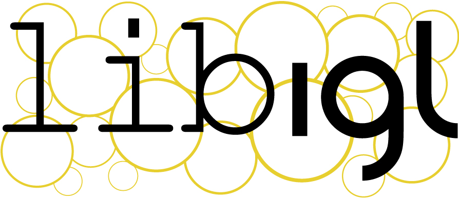
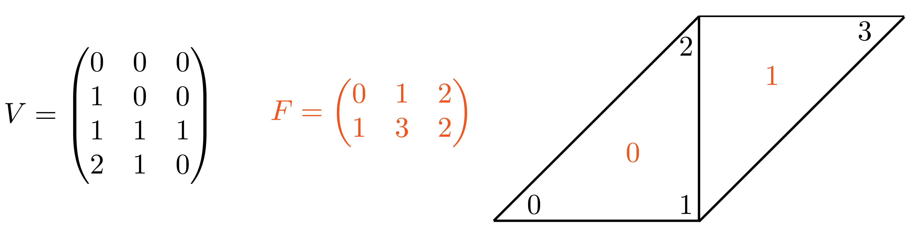
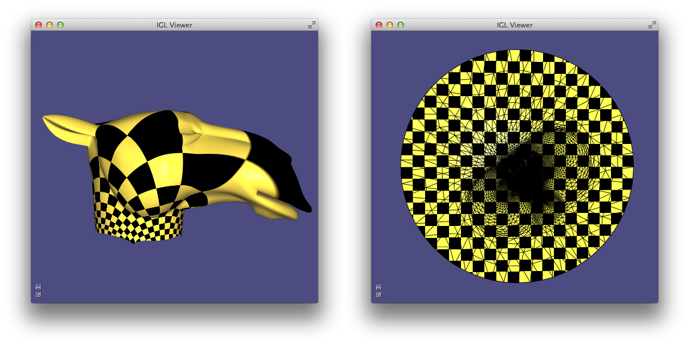
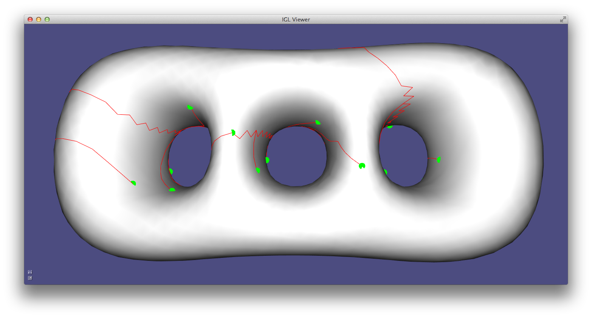
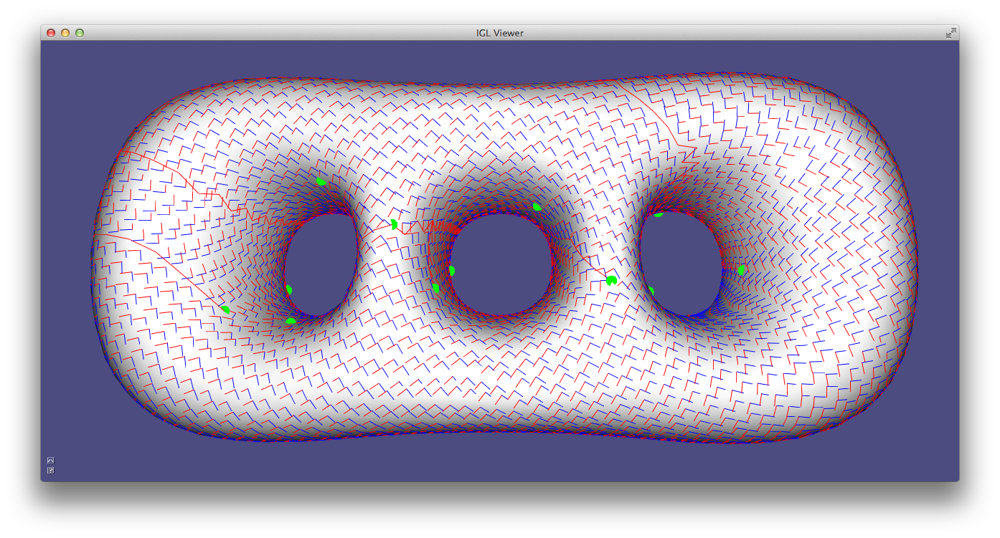
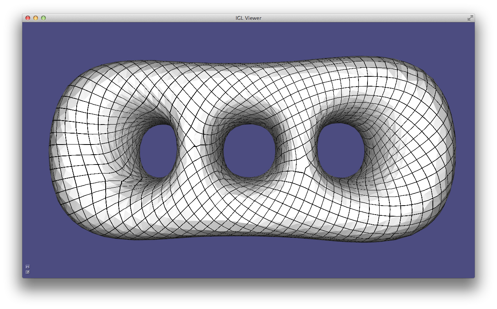
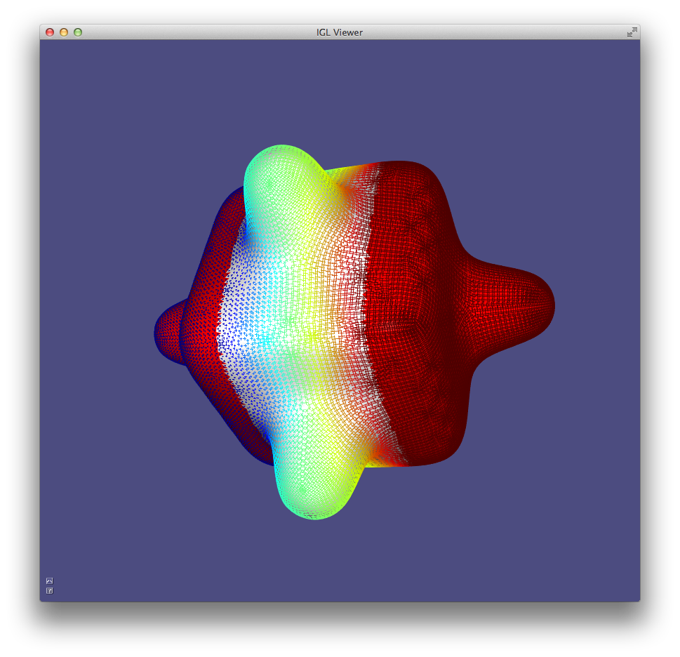
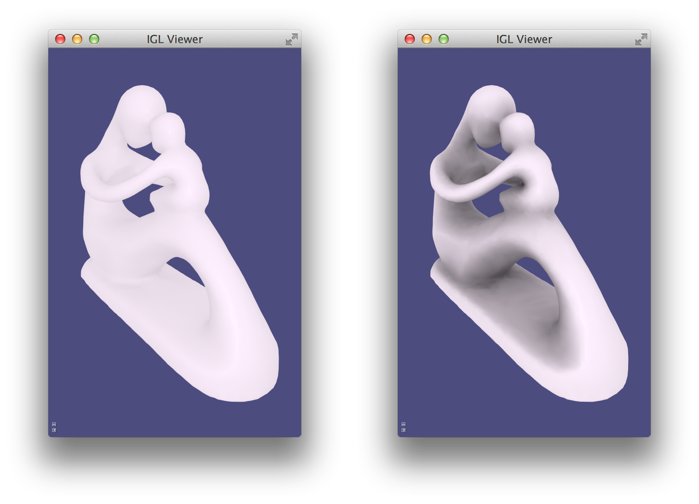
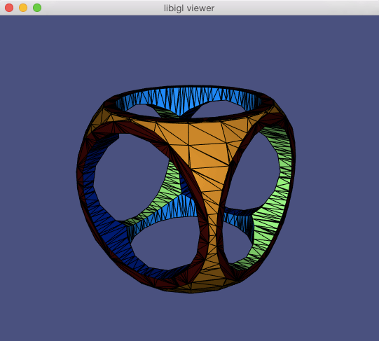
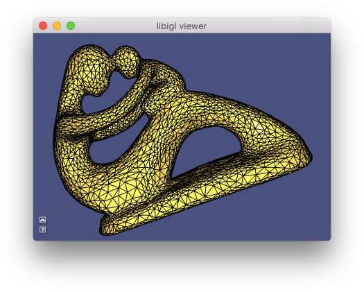

libigl tutorial

Libigl is an open source C++ library for geometry processing research and development. Dropping the heavy data structures of tradition geometry libraries, libigl is a simple header-only library of encapsulated functions. This combines the rapid prototyping familiar to Matlab or Python programmers with the performance and versatility of C++. The tutorial is a self-contained, hands-on introduction to libigl. Via interactive, step-by-step examples, we demonstrate how to accomplish common geometry processing tasks such as computation of differential quantities and operators, real-time deformation, parametrization, numerical optimization and remeshing. Each section of the lecture notes links to a cross-platform example application.
Chapter 1¶
We introduce libigl with a series of self-contained examples. The purpose of each example is to showcase a feature of libigl while applying to a practical problem in geometry processing. In this chapter, we will present the basic concepts of libigl and introduce a simple mesh viewer that allows to visualize a surface mesh and its attributes. All the tutorial examples are cross-platform and can be compiled on MacOSX, Linux and Windows.
Libigl Design Principles¶
Before getting into the examples, we summarize the main design principles in libigl:
-
No complex data types. We mostly use matrices and vectors. This greatly favors code reusability and forces the function authors to expose all the parameters used by the algorithm.
-
Minimal dependencies. We use external libraries only when necessary and we wrap them in a small set of functions.
-
Header-only. It is straight forward to use our library since it is only one additional include directory in your project. (if you are worried about compilation speed, it is also possible to build the library as a static library)
-
Function encapsulation. Every function (including its full implementation) is contained in a pair of .h/.cpp files with the same name of the function.
Downloading Libigl¶
libigl can be downloaded from our github repository or cloned with git:
git clone https://github.com/libigl/libigl.git
The core libigl functionality only depends on the C++ Standard Library and
Eigen. Optional dependencies will be downloaded upon issuing cmake, below.
To build all the examples in the tutorial (and tests), you can use the CMakeLists.txt in the root folder:
cd libigl/
mkdir build
cd build
cmake ../
make
Note about CGAL
The optional dependency CGAL has been notoriously difficult to setup (as it also depends on boost/gmp/mpfr). By default, it will only be enabled on Linux/macOS if GMP and MPFR are installed system-wide. On Windows, all its dependencies will be downloaded by CMake, thus requiring no setup on your part.
The examples can also be built independently using the CMakeLists.txt inside each example folder.
Note for linux users
Many linux distributions do not include gcc and the basic development tools in their default installation. On Ubuntu, you need to install the following packages:
sudo apt-get install \
git \
build-essential \
cmake \
libx11-dev \
mesa-common-dev libgl1-mesa-dev libglu1-mesa-dev \
libxrandr-dev \
libxi-dev \
libxmu-dev \
libblas-dev \
libxinerama-dev \
libxcursor-dev
Note for Windows users
libigl only supports the Microsoft Visual Studio 2015 compiler and later, in 64bit mode. It will not work with a 32bit build and it will not work with older versions of visual studio.
A few examples in Chapter 5 requires the CoMiSo solver. We provide a mirror of CoMISo that works out of the box with libigl. A copy will be downloaded automatically by CMake the first time you build the libigl root project. You can build the tutorials as usual and libigl will automatically find and compile CoMISo.
Note 1: CoMISo is distributed under the GPL3 license, it does impose restrictions on commercial usage.
Note 2: CoMISo requires a blas implementation. We use the built-in blas in macosx and linux, and we bundle a precompiled binary for VS2015 64 bit. Do NOT compile the tutorials in 32 bit on windows.
Libigl Example Project
We provide a blank project example showing how to use libigl and CMake. This is the recommended way of using libigl in your project. Feel free and encouraged to use this repository as a template to start a new personal project using libigl.
Mesh Representation¶
libigl uses the Eigen library to encode vector and matrices. We suggest that you keep the dense and sparse quick reference guides at hand while you read the examples in this tutorial.
A triangular mesh is encoded as a pair of matrices:
Eigen::MatrixXd V;
Eigen::MatrixXi F;
V is a #N by 3 matrix which stores the coordinates of the vertices. Each
row stores the coordinate of a vertex, with its x,y and z coordinates in the first,
second and third column, respectively. The matrix F stores the triangle
connectivity: each line of F denotes a triangle whose 3 vertices are
represented as indices pointing to rows of V.

Note that the order of the vertex indices in F determines the orientation of
the triangles and it should thus be consistent for the entire surface.
This simple representation has many advantages:
- it is memory efficient and cache friendly
- the use of indices instead of pointers greatly simplifies debugging
- the data can be trivially copied and serialized
libigl provides input [output] functions to read [write] many common mesh formats. The IO functions are contained in the files read*.h and write*.h. As a general rule each libigl function is contained in a pair of .h/.cpp files with the same name. By default, the .h files include the corresponding cpp files, making the library header-only.
Reading a mesh from a file requires a single libigl function call:
igl::readOFF(TUTORIAL_SHARED_PATH "/cube.off", V, F);
The function reads the mesh cube.off and it fills the provided V and F matrices.
Similarly, a mesh can be written in an OBJ file using:
igl::writeOBJ("cube.obj",V,F);
Example 101 contains a simple mesh converter from OFF to OBJ format.
Visualizing Surfaces¶
Libigl provides an glfw-based OpenGL 3.2 viewer to visualize surfaces, their properties and additional debugging information.
The following code (Example 102) is a basic skeleton for all the examples that will be used in the tutorial. It is a standalone application that loads a mesh and uses the viewer to render it.
#include <igl/readOFF.h>
#include <igl/opengl/glfw/Viewer.h>
Eigen::MatrixXd V;
Eigen::MatrixXi F;
int main(int argc, char *argv[])
{
// Load a mesh in OFF format
igl::readOFF(TUTORIAL_SHARED_PATH "/bunny.off", V, F);
// Plot the mesh
igl::opengl::glfw::Viewer viewer;
viewer.data().set_mesh(V, F);
viewer.launch();
}
The function set_mesh copies the mesh into the viewer.
Viewer.launch() creates a window, an OpenGL context and it starts the draw loop.
The default camera motion mode is 2-axis (ROTATION_TYPE_TWO_AXIS_VALUATOR_FIXED_UP),
which can be changed to 3-axis trackball style by adding this line:
viewer.core().set_rotation_type(igl::opengl::ViewerCore::ROTATION_TYPE_TRACKBALL);
Interaction With Keyboard And Mouse¶
Keyboard and mouse events triggers callbacks that can be registered in the viewer. The viewer supports the following callbacks:
bool (*callback_pre_draw)(Viewer& viewer);
bool (*callback_post_draw)(Viewer& viewer);
bool (*callback_mouse_down)(Viewer& viewer, int button, int modifier);
bool (*callback_mouse_up)(Viewer& viewer, int button, int modifier);
bool (*callback_mouse_move)(Viewer& viewer, int mouse_x, int mouse_y);
bool (*callback_mouse_scroll)(Viewer& viewer, float delta_y);
bool (*callback_key_down)(Viewer& viewer, unsigned char key, int modifiers);
bool (*callback_key_up)(Viewer& viewer, unsigned char key, int modifiers);
A keyboard callback can be used to visualize multiple meshes or different stages of an algorithm, as demonstrated in Example 103, where the keyboard callback changes the visualized mesh depending on the key pressed:
bool key_down(igl::opengl::glfw::Viewer& viewer, unsigned char key, int modifier)
{
if (key == '1')
{
viewer.data().clear();
viewer.data().set_mesh(V1, F1);
viewer.core.align_camera_center(V1,F1);
}
else if (key == '2')
{
viewer.data().clear();
viewer.data().set_mesh(V2, F2);
viewer.core.align_camera_center(V2,F2);
}
return false;
}
The callback is registered in the viewer as follows:
viewer.callback_key_down = &key_down;
Note that the mesh is cleared before using set_mesh. This has to be called every time the number of vertices or faces of the plotted mesh changes. Every callback returns a boolean value that tells the viewer if the event has been handled by the plugin, or if the viewer should process it normally. This is useful, for example, to disable the default mouse event handling if you want to control the camera directly in your code.
The viewer can be extended using plugins, which are classes that implements all the viewer’s callbacks. See the Viewer_plugin for more details.
Scalar Field Visualization¶
Colors can be associated to faces or vertices using the
set_colors function:
viewer.data().set_colors(C);
C is a #C by 3 matrix with one RGB color per row. C must have as many rows
as the number of faces or the number of vertices of the mesh. Depending on
the size of C, the viewer applies the color to the faces or to the vertices.
In Example 104, the colors of mesh vertices are set according to their Cartesian
coordinates.
Per-Vertex scalar fields can be directly visualized using set_data function:
viewer.data().set_data(D);
D is a #V by 1 vector with one value corresponding to each vertex. set_data
will color according to linearly interpolating the data within a triangle (in
the fragment shader) and use this
interpolated data to look up a color in a colormap (stored as a texture). The
colormap defaults to igl::COLOR_MAP_TYPE_VIRIDIS with 21 discrete intervals.
A custom colormap may be set with set_colormap.
Overlays¶
In addition to plotting the surface, the viewer supports the visualization of points, lines and text labels: these overlays can be very helpful while developing geometric processing algorithms to plot debug information.
viewer.data().add_points(P,Eigen::RowVector3d(r,g,b));
Draws a point of color r,g,b for each row of P. The point is placed at the coordinates specified in each row of P, which is a #P by 3 matrix. Size of the points (in pixels) can be changed globally by setting viewer.data().point_size.
viewer.data().add_edges(P1,P2,Eigen::RowVector3d(r,g,b));
Draws a line of color r,g,b for each row of P1 and P2, which connects the 3D point in to the point in P2. Both P1 and P2 are of size #P by 3.
viewer.data().add_label(p,str);
Draws a label containing the string str at the position p, which is a vector of length 3.
These functions are demonstrate in Example 105 where
the bounding box of a mesh is plotted using lines and points.
Using matrices to encode the mesh and its attributes allows to write short and
efficient code for many operations, avoiding to write for loops. For example,
the bounding box of a mesh can be found by taking the colwise maximum and minimum of V:
Eigen::Vector3d m = V.colwise().minCoeff();
Eigen::Vector3d M = V.colwise().maxCoeff();
Viewer Menu¶
As of latest version, the viewer uses a new menu and completely replaces AntTweakBar and nanogui with Dear ImGui. To extend the default menu of the viewer and to expose more user defined variables you have to implement a custom interface, as in Example 106:
// Add content to the default menu window
menu.callback_draw_viewer_menu = [&]()
{
// Draw parent menu content
menu.draw_viewer_menu();
// Add new group
if (ImGui::CollapsingHeader("New Group", ImGuiTreeNodeFlags_DefaultOpen))
{
// Expose variable directly ...
ImGui::InputFloat("float", &floatVariable, 0, 0, 3);
// ... or using a custom callback
static bool boolVariable = true;
if (ImGui::Checkbox("bool", &boolVariable))
{
// do something
std::cout << "boolVariable: " << std::boolalpha << boolVariable << std::endl;
}
// Expose an enumeration type
enum Orientation { Up=0, Down, Left, Right };
static Orientation dir = Up;
ImGui::Combo("Direction", (int *)(&dir), "Up\0Down\0Left\0Right\0\0");
// We can also use a std::vector<std::string> defined dynamically
static int num_choices = 3;
static std::vector<std::string> choices;
static int idx_choice = 0;
if (ImGui::InputInt("Num letters", &num_choices))
{
num_choices = std::max(1, std::min(26, num_choices));
}
if (num_choices != (int) choices.size())
{
choices.resize(num_choices);
for (int i = 0; i < num_choices; ++i)
choices[i] = std::string(1, 'A' + i);
if (idx_choice >= num_choices)
idx_choice = num_choices - 1;
}
ImGui::Combo("Letter", &idx_choice, choices);
// Add a button
if (ImGui::Button("Print Hello", ImVec2(-1,0)))
{
std::cout << "Hello\n";
}
}
};
If you need a separate new menu window implement:
// Draw additional windows
menu.callback_draw_custom_window = [&]()
{
// Define next window position + size
ImGui::SetNextWindowPos(ImVec2(180.f * menu.menu_scaling(), 10), ImGuiSetCond_FirstUseEver);
ImGui::SetNextWindowSize(ImVec2(200, 160), ImGuiSetCond_FirstUseEver);
ImGui::Begin(
"New Window", nullptr,
ImGuiWindowFlags_NoSavedSettings
);
// Expose the same variable directly ...
ImGui::PushItemWidth(-80);
ImGui::DragFloat("float", &floatVariable, 0.0, 0.0, 3.0);
ImGui::PopItemWidth();
static std::string str = "bunny";
ImGui::InputText("Name", str);
ImGui::End();
};
Multiple Meshes¶
Libigl’s igl::opengl::glfw::Viewer provides basic support for rendering
multiple meshes.
Which mesh is selected is controlled via the viewer.selected_data_index
field. By default the index is set to 0, so in the typical case of a single mesh
viewer.data() returns the igl::ViewerData corresponding to the one
and only mesh.

igl::opengl::glfw::Viewer can render multiple meshes, each with its own attributes like colors.
Multiple Views¶
Libigl’s igl::opengl::glfw::Viewer provides basic support for rendering meshes with multiple views.
A new view core can be added to the viewer using the Viewer::append_core() method.
There can be a maximum of 31 cores created through the life of any viewer.
Each core is assigned an unsigned int id that is guaranteed to be unique.
A core can be accessed by its id calling the Viewer::core(id) method.
When there are more than one view core, the user is responsible for specifying each
viewport’s size and position by setting their viewport attribute. The user must also
indicates how to resize each viewport when the size of the window changes. For example:
viewer.callback_post_resize = [&](igl::opengl::glfw::Viewer &v, int w, int h) {
v.core( left_view).viewport = Eigen::Vector4f(0, 0, w / 2, h);
v.core(right_view).viewport = Eigen::Vector4f(w / 2, 0, w - (w / 2), h);
return true;
};
Note that the viewport currently hovered by the mouse can be selected using the
Viewer::selected_core_index() method, and the selected view core can then be
accessed by calling viewer.core_list[viewer.selected_core_index].
Finally, the visibility of a mesh on a given view core is controlled by a bitmask flag per mesh. This property can be easily controlled by calling the method
viewer.data(mesh_id).set_visible(false, view_id);
When appending a new mesh or a new view core, an optional argument controls the visibility
of the existing objects with respect to the new mesh/view. Please refer to the documentation
of Viewer::append_mesh() and Viewer::append_core() for more details.
igl::opengl::glfw::Viewer can render the same scene using multiple views, each with its own attributes like colors, and individual mesh visibility.
Viewer Guizmos¶
Bug
It is currently not possible to have more than one ImGui-related viewer plugin active at the same time (that includes ImGuiMenu, ImGuizmoPlugin and SelectionPlugin). Please follow #1656 for more information.
The viewer integrates with ImGuizmo to provide
widgets for manipulating a mesh. Mesh manipulations consist of translations, rotations,
and scaling, where W,w, E,e, and R,r can be used to toggle between them, respectively.
First, register the ImGuizmoPlugin plugin with the Viewer:
#include <igl/opengl/glfw/imgui/ImGuizmoPlugin.h>
// ImGuizmoPlugin replaces the ImGuiMenu plugin entirely
igl::opengl::glfw::imgui::ImGuizmoPlugin plugin;
vr.plugins.push_back(&plugin);
On initialization, ImGuizmo must be provided with the mesh centroid, as shown in Example 109:
// Initialize ImGuizmo at mesh centroid
plugin.T.block(0,3,3,1) =
0.5*(V.colwise().maxCoeff() + V.colwise().minCoeff()).transpose().cast<float>();
// Update can be applied relative to this remembered initial transform
const Eigen::Matrix4f T0 = plugin.T;
// Attach callback to apply imguizmo's transform to mesh
plugin.callback = [&](const Eigen::Matrix4f & T)
{
const Eigen::Matrix4d TT = (T*T0.inverse()).cast<double>().transpose();
vr.data().set_vertices(
(V.rowwise().homogeneous()*TT).rowwise().hnormalized());
vr.data().compute_normals();
};
Msh Viewer¶
Libigl can read mixed meshes stored in Gmsh .msh version 2 file format.
These files can contain mixture of different meshes, as well as additional scalar and vector fields defined on element level and vertex level.
Eigen::MatrixXd X; // Vertex coorinates (Xx3)
Eigen::MatrixXi Tri; // Triangular elements (Yx3)
Eigen::MatrixXi Tet; // Tetrahedral elements (Zx4)
Eigen::VectorXi TriTag; // Integer tags defining triangular submeshes
Eigen::VectorXi TetTag; // Integer tags defining tetrahedral submeshes
std::vector<std::string> XFields; // headers (names) of fields defined on vertex level
std::vector<std::string> EFields; // headers (names) of fields defined on element level
std::vector<Eigen::MatrixXd> XF; // fields defined on vertex
std::vector<Eigen::MatrixXd> TriF; // fields defined on triangular elements
std::vector<Eigen::MatrixXd> TetF; // fields defined on tetrahedral elements
// loading mixed mesh from Gmsh file
igl::readMSH("hand.msh", X, Tri, Tet, TriTag, TetTag, XFields, XF, EFields, TriF, TetF);
The interactive viewer is unable to directly draw tetrahedra though. So for visualization purposes each tetrahedron can be converted to four triangles.
MatCaps¶
MatCaps (material captures), also known as environment maps, are a simple image-based rendering technique to achieve complex lighting without a complex shader program.
Using offline rendering or even a painting program, an image of a rendered unit sphere is created, such as this image of a sphere with a jade material viewed under studio lighting:
The position \mathbf{p} of each point on the sphere is also its unit normal vector \hat{\mathbf{n}} = \mathbf{p}. The idea of matcaps is to use this image of the sphere as a lookup table keyed on an input normal value and outputting the rgb color: I(\hat{\mathbf{n}}) \rightarrow (r,g,b).
When rendering a non-spherical shape, in the fragment shader we compute the normal vector \hat{\mathbf{n}} and then use its x- and y- components as texture coordinates to look up the corresponding point in the matcap image. In this way, there is no lighting model or lighting computation done in the fragment shader, it is simply a texture lookup, but rather than requiring a UV-mapping (parameterization) of the model, we use the per-fragment normals. By using the normal relative to the camera’s coordinate system we get view dependent complex lighting “for free”:
In libigl, if the rgba data for a matcap image is stored in R,G,B, and A
(as output, e.g., by igl::png::readPNG) then this can be attached to the
igl::opengl::ViewerData by setting it as the texture data and then turning on
matcap rendering:
viewer.data().set_texture(R,G,B,A);
viewer.data().use_matcap = true;
Chapter 2: Discrete Geometric Quantities And Operators¶
This chapter illustrates a few discrete quantities that libigl can compute on a mesh and the libigl functions that construct popular discrete differential geometry operators. It also provides an introduction to basic drawing and coloring routines of our viewer.
Normals¶
Surface normals are a basic quantity necessary for rendering a surface. There are a variety of ways to compute and store normals on a triangle mesh. Example 201 demonstrates how to compute and visualize normals with libigl.
Per-face¶
Normals are well defined on each triangle of a mesh as the vector orthogonal to triangle’s plane. These piecewise-constant normals produce piecewise-flat renderings: the surface appears non-smooth and reveals its underlying discretization.
Per-vertex¶
Normals can be computed and stored on vertices, and interpolated in the interior of the triangles to produce smooth renderings (Phong shading). Most techniques for computing per-vertex normals take an average of incident face normals. The main difference between these techniques is their weighting scheme: Uniform weighting is heavily biased by the discretization choice, whereas area-based or angle-based weighting is more forgiving.
The typical half-edge style computation of area-based weights has this structure:
N.setZero(V.rows(),3);
for(int i : vertices)
{
for(face : incident_faces(i))
{
N.row(i) += face.area * face.normal;
}
}
N.rowwise().normalize();
At first glance, it might seem inefficient to loop over incident faces—and thus constructing the per-vertex normals— without using an half-edge data structure. However, per-vertex normals may be throwing each face normal to running sums on its corner vertices:
N.setZero(V.rows(),3);
for(int f = 0; f < F.rows();f++)
{
for(int c = 0; c < 3;c++)
{
N.row(F(f,c)) += area(f) * face_normal.row(f);
}
}
N.rowwise().normalize();
Per-corner¶
Storing normals per-corner is an efficient and convenient way of supporting both smooth and sharp (e.g. creases and corners) rendering. This format is common to OpenGL and the .obj mesh file format. Often such normals are tuned by the mesh designer, but creases and corners can also be computed automatically. Libigl implements a simple scheme which computes corner normals as averages of normals of faces incident on the corresponding vertex which do not deviate by more than a specified dihedral angle (e.g. 20).
Normals example computes per-face (left), per-vertex (middle) and per-corner (right) normals
Gaussian Curvature¶
Gaussian curvature on a continuous surface is defined as the product of the principal curvatures:
k_G = k_1 k_2.
As an intrinsic measure, it depends on the metric and not the surface’s embedding.
Intuitively, Gaussian curvature tells how locally spherical or elliptic the surface is ( k_G>0 ), how locally saddle-shaped or hyperbolic the surface is ( k_G<0 ), or how locally cylindrical or parabolic ( k_G=0 ) the surface is.
In the discrete setting, one definition for a “discrete Gaussian curvature” on a triangle mesh is via a vertex’s angular deficit:
k_G(v_i) = 2 - \sum\limits_{j\in N(i)}_{ij},
where N(i) are the triangles incident on vertex i and _{ij} is the angle at vertex i in triangle j 3.
Just like the continuous analog, our discrete Gaussian curvature reveals elliptic, hyperbolic and parabolic vertices on the domain, as demonstrated in Example 202.
GaussianCurvature example computes discrete Gaussian curvature and visualizes it in pseudocolor.
Curvature Directions¶
The two principal curvatures (k_1,k_2) at a point on a surface measure how much the surface bends in different directions. The directions of maximum and minimum (signed) bending are called principal directions and are always orthogonal.
Mean curvature is defined as the average of principal curvatures:
H = \frac{1}{2}(k_1 + k_2).
One way to extract mean curvature is by examining the Laplace-Beltrami operator applied to the surface positions. The result is a so-called mean-curvature normal:
-\Delta \mathbf{x} = H \mathbf{n}.
It is easy to compute this on a discrete triangle mesh in libigl using the cotangent Laplace-Beltrami operator 3.
#include <igl/cotmatrix.h>
#include <igl/massmatrix.h>
#include <igl/invert_diag.h>
...
MatrixXd HN;
SparseMatrix<double> L,M,Minv;
igl::cotmatrix(V,F,L);
igl::massmatrix(V,F,igl::MASSMATRIX_TYPE_VORONOI,M);
igl::invert_diag(M,Minv);
HN = -Minv*(L*V);
H = HN.rowwise().norm(); //up to sign
Combined with the angle defect definition of discrete Gaussian curvature, one can define principal curvatures and use least squares fitting to find directions 3.
Alternatively, a robust method for determining principal curvatures is via quadric fitting 5. In the neighborhood around every vertex, a best-fit quadric is found and principal curvature values and directions are analytically computed on this quadric (Example 203).

CurvatureDirections example computes principal curvatures via quadric fitting and visualizes mean curvature in pseudocolor and principal directions with a cross field.
Gradient¶
Scalar functions on a surface can be discretized as a piecewise linear function with values defined at each mesh vertex:
f(\mathbf{x}) \approx \sum\limits_{i=1}^n \phi_i(\mathbf{x})\, f_i,
where \phi_i is a piecewise linear hat function defined by the mesh so that for each triangle \phi_i is the linear function which is one only at vertex i and zero at the other corners.

Thus gradients of such piecewise linear functions are simply sums of gradients of the hat functions:
\nabla f(\mathbf{x}) \approx \nabla \sum\limits_{i=1}^n \phi_i(\mathbf{x})\, f_i = \sum\limits_{i=1}^n \nabla \phi_i(\mathbf{x})\, f_i.
This reveals that the gradient is a linear function of the vector of f_i values. Because the \phi_i are linear in each triangle, their gradients are constant in each triangle. Thus our discrete gradient operator can be written as a matrix multiplication taking vertex values to triangle values:
\nabla f \approx \mathbf{G}\,\mathbf{f},
where \mathbf{f} is n\times 1 and \mathbf{G} is an md\times n sparse
matrix. This matrix \mathbf{G} can be derived geometrically, e.g.
ch. 21.
Libigl’s grad function computes \mathbf{G} for
triangle and tetrahedral meshes (Example 204):
Gradient example computes gradients of an input function on a mesh and visualizes the vector field.
Laplacian¶
The discrete Laplacian is an essential geometry processing tool. Many interpretations and flavors of the Laplace and Laplace-Beltrami operator exist.
In open Euclidean space, the Laplace operator is the usual divergence of gradient (or equivalently the Laplacian of a function is the trace of its Hessian):
\Delta f = \frac{\partial^2 f}{\partial x^2} + \frac{\partial^2 f}{\partial y^2} + \frac{\partial^2 f}{\partial z^2}.
The Laplace-Beltrami operator generalizes this to surfaces.
When considering piecewise-linear functions on a triangle mesh, a discrete Laplacian may be derived in a variety of ways. The most popular in geometry processing is the so-called ``cotangent Laplacian’’ \mathbf{L}, arising simultaneously from FEM, DEC and applying divergence theorem to vertex one-rings. As a linear operator taking vertex values to vertex values, the Laplacian \mathbf{L} is a n\times n matrix with elements:
L_{ij} = \begin{cases}j \in N(i) &\cot \alpha_{ij} + \cot \beta_{ij},\\ j \notin N(i) & 0,\\ i = j & -\sum\limits_{k\neq i} L_{ik}, \end{cases}
where N(i) are the vertices adjacent to (neighboring) vertex i, and \alpha_{ij},\beta_{ij} are the angles opposite to edge {ij}. This formula leads to a typical half-edge style implementation for constructing \mathbf{L}:
for(int i : vertices)
{
for(int j : one_ring(i))
{
for(int k : triangle_on_edge(i,j))
{
L(i,j) += cot(angle(i,j,k));
L(i,i) -= cot(angle(i,j,k));
}
}
}
Similarly as before, it may seem to loop over one-rings without having an half-edge data structure. However, this is not the case, since the Laplacian may be built by summing together contributions for each triangle, much in spirit with its FEM discretization of the Dirichlet energy (sum of squared gradients):
for(triangle t : triangles)
{
for(edge i,j : t)
{
L(i,j) += cot(angle(i,j,k));
L(j,i) += cot(angle(i,j,k));
L(i,i) -= cot(angle(i,j,k));
L(j,j) -= cot(angle(i,j,k));
}
}
Libigl implements discrete “cotangent” Laplacians for triangles meshes and tetrahedral meshes, building both with fast geometric rules rather than “by the book” FEM construction which involves many (small) matrix inversions, cf. 6.
The operator applied to mesh vertex positions amounts to smoothing by flowing the surface along the mean curvature normal direction (Example 205). Note that this is equivalent to minimizing surface area.
Laplacian example computes conformalized mean curvature flow using the cotangent Laplacian 2.
Mass Matrix¶
The mass matrix \mathbf{M} is another n \times n matrix which takes vertex values to vertex values. From an FEM point of view, it is a discretization of the inner-product: it accounts for the area around each vertex. Consequently, \mathbf{M} is often a diagonal matrix, such that M_{ii} is the barycentric or voronoi area around vertex i in the mesh 3. The inverse of this matrix is also very useful as it transforms integrated quantities into point-wise quantities, e.g.:
\Delta f \approx \mathbf{M}^{-1} \mathbf{L} \mathbf{f}.
In general, when encountering squared quantities integrated over the surface, the mass matrix will be used as the discretization of the inner product when sampling function values at vertices:
\int_S x\, y\ dA \approx \mathbf{x}^T\mathbf{M}\,\mathbf{y}.
An alternative mass matrix \mathbf{T} is a md \times md matrix which takes triangle vector values to triangle vector values. This matrix represents an inner-product accounting for the area associated with each triangle (i.e. the triangles true area).
Alternative Construction Of Laplacian¶
An alternative construction of the discrete cotangent Laplacian is by “squaring” the discrete gradient operator. This may be derived by applying Green’s identity (ignoring boundary conditions for the moment):
\int_S \|\nabla f\|^2 dA = \int_S f \Delta f dA
Or in matrix form which is immediately translatable to code:
\mathbf{f}^T \mathbf{G}^T \mathbf{T} \mathbf{G} \mathbf{f} = \mathbf{f}^T \mathbf{M} \mathbf{M}^{-1} \mathbf{L} \mathbf{f} = \mathbf{f}^T \mathbf{L} \mathbf{f}.
So we have that \mathbf{L} = \mathbf{G}^T \mathbf{T} \mathbf{G}. This also hints that we may consider \mathbf{G}^T as a discrete divergence operator, since the Laplacian is the divergence of the gradient. Naturally, \mathbf{G}^T is a n \times md sparse matrix which takes vector values stored at triangle faces to scalar divergence values at vertices.
Exact Discrete Geodesic Distances¶
The discrete geodesic distance between two points is the length of the shortest path between then restricted to the surface. For triangle meshes, such a path is made of a set of segments which can be either edges of the mesh or crossing a triangle.
Libigl includes a wrapper for the exact geodesic algorithm 4 developed by Danil Kirsanov (https://code.google.com/archive/p/geodesic/), exposing it through an Eigen-based API. The function
igl::exact_geodesic(V,F,VS,FS,VT,FT,d);
vid, to all vertices of F you can use:
Eigen::VectorXi VS,FS,VT,FT;
// The selected vertex is the source
VS.resize(1);
VS << vid;
// All vertices are the targets
VT.setLinSpaced(V.rows(),0,V.rows()-1);
Eigen::VectorXd d;
igl::exact_geodesic(V,F,VS,FS,VT,FT,d);
allows to interactively pick the source vertex and displays the distance using a periodic color pattern.](images/geodesicdistance.jpg)
Chapter 3: Matrices And Linear Algebra¶
Libigl relies heavily on the Eigen library for dense and sparse linear algebra routines. Besides geometry processing routines, libigl has linear algebra routines which bootstrap Eigen and make it feel even more similar to a high-level algebra library such as Matlab.
Slice¶
A very familiar and powerful routine in Matlab is array slicing. This allows reading from or writing to a possibly non-contiguous sub-matrix. Let’s consider the Matlab code:
B = A(R,C);
If A is a m \times n matrix and R is a j-long list of row-indices
(between 1 and m) and C is a k-long list of column-indices, then as a
result B will be a j \times k matrix drawing elements from A according to
R and C. In libigl, the same functionality is provided by the slice
function (Example 301):
VectorXi R,C;
MatrixXd A,B;
...
igl::slice(A,R,C,B);
Note that A and B could also be sparse matrices.
Similarly, consider the Matlab code:
A(R,C) = B;
Now, the selection is on the left-hand side so the j \times k matrix B is
being written into the submatrix of A determined by R and C. This
functionality is provided in libigl using slice_into:
igl::slice_into(B,R,C,A);
Slice shows how to use igl::slice to change the colors for triangles on a mesh.
Sort¶
Matlab and other higher-level languages make it very easy to extract indices of sorting and comparison routines. For example in Matlab, one can write:
[Y,I] = sort(X,1,'ascend');
so if X is a m \times n matrix then Y will also be an m \times n matrix
with entries sorted along dimension 1 in 'ascend'ing order. The second
output I is a m \times n matrix of indices such that Y(i,j) =
X(I(i,j),j);. That is, I reveals how X is sorted into Y.
This same functionality is supported in libigl:
igl::sort(X,1,true,Y,I);
Similarly, sorting entire rows can be accomplished in Matlab using:
[Y,I] = sortrows(X,'ascend');
where now I is a m vector of indices such that Y = X(I,:).
In libigl, this is supported with
igl::sortrows(X,true,Y,I);
I reveals the index of sort so that it can be reproduced with
igl::slice(X,I,1,Y).
Analogous functions are available in libigl for: max, min, and unique.
Sort shows how to use igl::sortrows to pseudocolor triangles according to their barycenters’ sorted order (Example 302).
Other Matlab-style Functions¶
Libigl implements a variety of other routines with the same api and functionality as common Matlab functions.
| Name | Description |
|---|---|
igl::all |
Whether all elements are non-zero (true) |
igl::any |
Whether any elements are non-zero (true) |
igl::cat |
Concatenate two matrices (especially useful for dealing with Eigen sparse matrices) |
igl::ceil |
Round entries up to nearest integer |
igl::cumsum |
Cumulative sum of matrix elements |
igl::colon |
Act like Matlab’s :, similar to Eigen’s LinSpaced |
igl::components |
Connected components of graph (cf. Matlab’s graphconncomp) |
igl::count |
Count non-zeros in rows or columns |
igl::cross |
Cross product per-row |
igl::cumsum |
Cumulative summation |
igl::dot |
dot product per-row |
igl::eigs |
Solve sparse eigen value problem |
igl::find |
Find subscripts of non-zero entries |
igl::floor |
Round entries down to nearest integer |
igl::histc |
Counting occurrences for building a histogram |
igl::hsv_to_rgb |
Convert HSV colors to RGB (cf. Matlab’s hsv2rgb) |
igl::intersect |
Set intersection of matrix elements. |
igl::isdiag |
Determine whether matrix is diagonal |
igl::ismember |
Determine whether elements in A occur in B |
igl::jet |
Quantized colors along the rainbow. |
igl::max |
Compute maximum entry per row or column |
igl::median |
Compute the median per column |
igl::min |
Compute minimum entry per row or column |
igl::mod |
Compute per element modulo |
igl::mode |
Compute the mode per column |
igl::null |
Compute the null space basis of a matrix |
igl::nchoosek |
Compute all k-size combinations of n-long vector |
igl::orth |
Orthogonalization of a basis |
igl::parula |
Generate a quantized colormap from blue to yellow |
igl::pinv |
Compute Moore-Penrose pseudoinverse |
igl::randperm |
Generate a random permutation of [0,…,n-1] |
igl::rgb_to_hsv |
Convert RGB colors to HSV (cf. Matlab’s rgb2hsv) |
igl::repmat |
Repeat a matrix along columns and rows |
igl::round |
Per-element round to whole number |
igl::setdiff |
Set difference of matrix elements |
igl::setunion |
Set union of matrix elements |
igl::setxor |
Set exclusive “or” of matrix elements |
igl::slice |
Slice parts of matrix using index lists: (cf. Matlab’s B = A(I,J)) |
igl::slice_mask |
Slice parts of matrix using boolean masks: (cf. Matlab’s B = A(M,N)) |
igl::slice_into |
Slice left-hand side of matrix assignment using index lists (cf. Matlab’s B(I,J) = A) |
igl::sort |
Sort elements or rows of matrix |
igl::speye |
Identity as sparse matrix |
igl::sum |
Sum along columns or rows (of sparse matrix) |
igl::unique |
Extract unique elements or rows of matrix |
Laplace Equation¶
A common linear system in geometry processing is the Laplace equation:
z = 0
subject to some boundary conditions, for example Dirichlet boundary conditions (fixed value):
\left.z\right|_{\partial{S}} = z_{bc}
In the discrete setting, the linear system can be written as:
\mathbf{L} \mathbf{z} = \mathbf{0}
where \mathbf{L} is the n \times n discrete Laplacian and \mathbf{z} is a vector of per-vertex values. Most of \mathbf{z} correspond to interior vertices and are unknown, but some of \mathbf{z} represent values at boundary vertices. Their values are known so we may move their corresponding terms to the right-hand side.
Conceptually, this is very easy if we have sorted \mathbf{z} so that interior vertices come first and then boundary vertices:
The bottom block of equations is no longer meaningful so we’ll only consider the top block:
We can move the known values to the right-hand side:
Finally we can solve this equation for the unknown values at interior vertices \mathbf{z}_{in}.
However, our vertices will often not be sorted in this way. One option would be to sort V,
then proceed as above and then unsort the solution Z to match V. However,
this solution is not very general.
With array slicing no explicit sort is needed. Instead we can slice-out
submatrix blocks (\mathbf{L}_{in,in}, \mathbf{L}_{in,b}, etc.) and follow
the linear algebra above directly. Then we can slice the solution into the
rows of Z corresponding to the interior vertices (Example 303).
LaplaceEquation example solves a Laplace equation with Dirichlet boundary conditions.
Quadratic Energy Minimization¶
The same Laplace equation may be equivalently derived by minimizing Dirichlet energy subject to the same boundary conditions:
\mathop{\text{minimize }}_z \frac{1}{2}\int\limits_S \|\nabla z\|^2 dA
On our discrete mesh, recall that this becomes
\mathop{\text{minimize }}_\mathbf{z} \frac{1}{2}\mathbf{z}^T \mathbf{G}^T \mathbf{D} \mathbf{G} \mathbf{z} \rightarrow \mathop{\text{minimize }}_\mathbf{z} \mathbf{z}^T \mathbf{L} \mathbf{z}
The general problem of minimizing some energy over a mesh subject to fixed value boundary conditions is so wide spread that libigl has a dedicated api for solving such systems.
Let us consider a general quadratic minimization problem subject to different common constraints:
subject to
where
- \mathbf{Q} is a (usually sparse) n \times n positive semi-definite matrix of quadratic coefficients (Hessian),
- \mathbf{B} is a n \times 1 vector of linear coefficients,
- \mathbf{z}_b is a |b| \times 1 portion of \mathbf{z} corresponding to boundary or fixed vertices,
- \mathbf{z}_{bc} is a |b| \times 1 vector of known values corresponding to \mathbf{z}_b,
- \mathbf{A}_{eq} is a (usually sparse) m \times n matrix of linear equality constraint coefficients (one row per constraint), and
- \mathbf{B}_{eq} is a m \times 1 vector of linear equality constraint right-hand side values.
This specification is overly general as we could write \mathbf{z}_b = \mathbf{z}_{bc} as rows of \mathbf{A}_{eq} \mathbf{z} = \mathbf{B}_{eq}, but these fixed value constraints appear so often that they merit a dedicated place in the API.
In libigl, solving such quadratic optimization problems is split into two routines: precomputation and solve. Precomputation only depends on the quadratic coefficients, known value indices and linear constraint coefficients:
igl::min_quad_with_fixed_data mqwf;
igl::min_quad_with_fixed_precompute(Q,b,Aeq,true,mqwf);
The output is a struct mqwf which contains the system matrix factorization
and is used during solving with arbitrary linear terms, known values, and
constraint in the right-hand sides:
igl::min_quad_with_fixed_solve(mqwf,B,bc,Beq,Z);
The output Z is a n \times 1 vector of solutions with fixed values
correctly placed to match the mesh vertices V.
Linear Equality Constraints¶
We saw above that min_quad_with_fixed_* in libigl provides a compact way to
solve general quadratic programs. Let’s consider another example, this time
with active linear equality constraints. Specifically let’s solve the
bi-Laplace equation or equivalently minimize the Laplace energy:
subject to fixed value constraints and a linear equality constraint:
z_{a} = 1, z_{b} = -1 and z_{c} = z_{d}.
Notice that we can rewrite the last constraint in the familiar form from above:
z_{c} - z_{d} = 0.
Now we can assembly Aeq as a 1 \times n sparse matrix with a coefficient
1 in the column corresponding to vertex c and a -1 at d. The right-hand
side Beq is simply zero.
Internally, min_quad_with_fixed_* solves using the Lagrange Multiplier
method. This method adds additional variables for each linear constraint (in
general a m \times 1 vector of variables \lambda) and then solves the
saddle problem:
This can be rewritten in a more familiar form by stacking \mathbf{z} and \lambda into one (m+n) \times 1 vector of unknowns:
Differentiating with respect to \left( \mathbf{z}^T \lambda^T \right) reveals
a linear system and we can solve for \mathbf{z} and \lambda. The only
difference from the straight quadratic minimization system, is that this
saddle problem system will not be positive definite. Thus, we must use a
different factorization technique (LDLT rather than LLT): libigl’s
min_quad_with_fixed_precompute automatically chooses the correct solver in
the presence of linear equality constraints (Example 304).
LinearEqualityConstraints first solves with just fixed value constraints (left: 1 and -1 on the left hand and foot respectively), then solves with an additional linear equality constraint (right: points on right hand and foot constrained to be equal).
Quadratic Programming¶
We can generalize the quadratic optimization in the previous section even more by allowing inequality constraints. Specifically box constraints (lower and upper bounds):
\mathbf{l} \le \mathbf{z} \le \mathbf{u},
where \mathbf{l},\mathbf{u} are n \times 1 vectors of lower and upper bounds and general linear inequality constraints:
\mathbf{A}_{ieq} \mathbf{z} \le \mathbf{B}_{ieq},
where \mathbf{A}_{ieq} is a k \times n matrix of linear coefficients and \mathbf{B}_{ieq} is a k \times 1 matrix of constraint right-hand sides.
Again, we are overly general as the box constraints could be written as rows of the linear inequality constraints, but bounds appear frequently enough to merit a dedicated api.
Libigl implements its own active set routine for solving quadratric programs (QPs). This algorithm works by iteratively “activating” violated inequality constraints by enforcing them as equalities and “deactivating” constraints which are no longer needed.
After deciding which constraints are active at each iteration, the problem reduces to a quadratic minimization subject to linear equality constraints, and the method from the previous section is invoked. This is repeated until convergence.
Currently the implementation is efficient for box constraints and sparse non-overlapping linear inequality constraints.
Unlike alternative interior-point methods, the active set method benefits from a warm-start (initial guess for the solution vector \mathbf{z}).
igl::active_set_params as;
// Z is optional initial guess and output
igl::active_set(Q,B,b,bc,Aeq,Beq,Aieq,Bieq,lx,ux,as,Z);
Eigen Decomposition¶
Libigl has rudimentary support for extracting eigen pairs of a generalized eigen value problem:
Ax = \lambda B x
where A is a sparse symmetric matrix and B is a sparse positive definite matrix. Most commonly in geometry processing, we let A=L the cotangent Laplacian and B=M the per-vertex mass matrix (e.g. 10). Typically applications will make use of the low frequency eigen modes. Analogous to the Fourier decomposition, a function f on a surface can be represented via its spectral decomposition of the eigen modes of the Laplace-Beltrami:
f = \sum\limits_{i=1}^\infty a_i \phi_i
where each \phi_i is an eigen function satisfying: \Delta \phi_i = \lambda_i \phi_i and a_i are scalar coefficients. For a discrete triangle mesh, a completely analogous decomposition exists, albeit with finite sum:
\mathbf{f} = \sum\limits_{i=1}^n a_i \phi_i
where now a column vector of values at vertices \mathbf{f} \in \mathcal{R}^n specifies a piecewise linear function and \phi_i \in \mathcal{R}^n is an eigen vector satisfying:
\mathbf{L} \phi_i = \lambda_i \mathbf{M} \phi_i.
Note that Vallet & Levy 10 propose solving a symmetrized standard eigen problem \mathbf{M}^{-1/2}\mathbf{L}\mathbf{M}^{-1/2} \phi_i = \lambda_i \phi_i. Libigl implements a generalized eigen problem solver so this unnecessary symmetrization can be avoided.
Often the sum above is truncated to the first k eigen vectors. If the low frequency modes are chosen, i.e. those corresponding to small \lambda_i values, then this truncation effectively regularizes \mathbf{f} to smooth, slowly changing functions over the mesh (e.g. 8). Modal analysis and model subspaces have been used frequently in real-time deformation (e.g. 7).
In Example 306), the first 5 eigen vectors
of the discrete Laplace-Beltrami operator are computed and displayed in
pseudo-color atop the beetle. Eigen vectors are computed using igl::eigs
(mirroring MATLAB’s eigs). The 5 eigen vectors are placed into the columns
of U and the eigen values are placed into the entries of S:
SparseMatrix<double> L,M;
igl::cotmatrix(V,F,L);
igl::massmatrix(V,F,igl::MASSMATRIX_TYPE_DEFAULT,M);
Eigen::MatrixXd U;
Eigen::VectorXd S;
igl::eigs(L,M,5,igl::EIGS_TYPE_SM,U,S);
Chapter 4: Shape Deformation¶
Modern mesh-based shape deformation methods satisfy user deformation constraints at handles (selected vertices or regions on the mesh) and propagate these handle deformations to the rest of shape smoothly and without removing or distorting details. Libigl provides implementations of a variety of state-of-the-art deformation techniques, ranging from quadratic mesh-based energy minimizers, to skinning methods, to non-linear elasticity-inspired techniques.
Biharmonic Deformation¶
The period of research between 2000 and 2010 produced a collection of techniques that cast the problem of handle-based shape deformation as a quadratic energy minimization problem or equivalently the solution to a linear partial differential equation.
There are many flavors of these techniques, but a prototypical subset are those that consider solutions to the bi-Laplace equation, that is a biharmonic function 11. This fourth-order PDE provides sufficient flexibility in boundary conditions to ensure C^1 continuity at handle constraints (in the limit under refinement) 15.
Biharmonic Surfaces¶
Let us first begin our discussion of biharmonic deformation, by considering biharmonic surfaces. We will casually define biharmonic surfaces as surface whose position functions are biharmonic with respect to some initial parameterization:
\Delta^2 \mathbf{x}' = 0
and subject to some handle constraints, conceptualized as “boundary conditions”:
\mathbf{x}'_{b} = \mathbf{x}_{bc}.
where \mathbf{x}' is the unknown 3D position of a point on the surface. So we are asking that the bi-Laplacian of each of spatial coordinate function to be zero.
In libigl, one can solve a biharmonic problem with igl::harmonic
and setting k=2 (bi-harmonic):
// U_bc contains deformation of boundary vertices b
igl::harmonic(V,F,b,U_bc,2,U);
This produces a smooth surface that interpolates the handle constraints, but all original details on the surface will be smoothed away. Most obviously, if the original surface is not already biharmonic, then giving all handles the identity deformation (keeping them at their rest positions) will not reproduce the original surface. Rather, the result will be the biharmonic surface that does interpolate those handle positions.
Thus, we may conclude that this is not an intuitive technique for shape deformation.
Biharmonic Deformation Fields¶
Now we know that one useful property for a deformation technique is “rest pose reproduction”: applying no deformation to the handles should apply no deformation to the shape.
To guarantee this by construction we can work with deformation fields (ie. displacements) \mathbf{d} rather than directly with positions \mathbf{x}. Then the deformed positions can be recovered as
\mathbf{x}' = \mathbf{x}+\mathbf{d}.
A smooth deformation field \mathbf{d} which interpolates the deformation fields of the handle constraints will impose a smooth deformed shape \mathbf{x}'. Naturally, we consider biharmonic deformation fields:
\Delta^2 \mathbf{d} = 0
subject to the same handle constraints, but rewritten in terms of their implied deformation field at the boundary (handles):
\mathbf{d}_b = \mathbf{x}_{bc} - \mathbf{x}_b.
Again we can use igl::harmonic with k=2, but this time solve for the
deformation field and then recover the deformed positions:
// U_bc contains deformation of boundary vertices b
D_bc = U_bc - igl::slice(V,b,1);
igl::harmonic(V,F,b,D_bc,2,D);
U = V+D;

Relationship To “differential Coordinates” And Laplacian Surface Editing¶
Biharmonic functions (whether positions or displacements) are solutions to the bi-Laplace equation, but also minimizers of the “Laplacian energy”. For example, for displacements \mathbf{d}, the energy reads
\int\limits_S \|\Delta \mathbf{d}\|^2 dA,
where we define \Delta \mathbf{d} to simply apply the Laplacian coordinate-wise.
By linearity of the Laplace(-Beltrami) operator we can reexpress this energy in terms of the original positions \mathbf{x} and the unknown positions \mathbf{x}' = \mathbf{x} - \mathbf{d}:
\int\limits_S \|\Delta (\mathbf{x}' - \mathbf{x})\|^2 dA = \int\limits_S \|\Delta \mathbf{x}' - \Delta \mathbf{x})\|^2 dA.
In the early work of Sorkine et al., the quantities \Delta \mathbf{x}' and \Delta \mathbf{x} were dubbed “differential coordinates” 21. Their deformations (without linearized rotations) is thus equivalent to biharmonic deformation fields.
Polyharmonic Deformation¶
We can generalize biharmonic deformation by considering different powers of the Laplacian, resulting in a series of PDEs of the form:
\Delta^k \mathbf{d} = 0.
with k\in{1,2,3,\dots}. The choice of k determines the level of continuity at the handles. In particular, k=1 implies C^0 at the boundary, k=2 implies C^1, k=3 implies C^2 and in general k implies C^{k-1}.
int k = 2;// or 1,3,4,...
igl::harmonic(V,F,b,bc,k,Z);

Bounded Biharmonic Weights¶
In computer animation, shape deformation is often referred to as “skinning”. Constraints are posed as relative rotations of internal rigid “bones” inside a character. The deformation method, or skinning method, determines how the surface of the character (i.e. its skin) should move as a function of the bone rotations.
The most popular technique is linear blend skinning. Each point on the shape computes its new location as a linear combination of bone transformations:
\mathbf{x}' = \sum\limits_{i = 1}^m w_i(\mathbf{x}) \mathbf{T}_i \left(\begin{array}{c}\mathbf{x}_i\\1\end{array}\right),
where w_i(\mathbf{x}) is the scalar weight function of the ith bone evaluated at \mathbf{x} and \mathbf{T}_i is the bone transformation as a 4 \times 3 matrix.
This formula is embarassingly parallel (computation at one point does not depend on shared data need by computation at another point). It is often implemented as a vertex shader. The weights and rest positions for each vertex are sent as vertex shader attributes and bone transformations are sent as uniforms. Then vertices are transformed within the vertex shader, just in time for rendering.
As the skinning formula is linear (hence its name), we can write it as matrix multiplication:
\mathbf{X}' = \mathbf{M} \mathbf{T},
where \mathbf{X}' is n \times 3 stack of deformed positions as row vectors, \mathbf{M} is a n \times m\cdot dim matrix containing weights and rest positions and \mathbf{T} is a m\cdot (dim+1) \times dim stack of transposed bone transformations.
Traditionally, the weight functions w_j are painted manually by skilled rigging professionals. Modern techniques now exist to compute weight functions automatically given the shape and a description of the skeleton (or in general any handle structure such as a cage, collection of points, selected regions, etc.).
Bounded biharmonic weights are one such technique that casts weight computation as a constrained optimization problem 13. The weights enforce smoothness by minimizing the familiar Laplacian energy:
\sum\limits_{i = 1}^m \int_S (\Delta w_i)^2 dA
subject to constraints which enforce interpolation of handle constraints:
w_i(\mathbf{x}) = \begin{cases} 1 & \text{ if } \mathbf{x} \in H_i\\ 0 & \text{ otherwise } \end{cases},
where H_i is the ith handle, and constraints which enforce non-negativity, parition of unity and encourage sparsity:
0\le w_i \le 1 and \sum\limits_{i=1}^m w_i = 1.
This is a quadratic programming problem and libigl solves it using its active set solver or by calling out to Mosek.
Dual Quaternion Skinning¶
Even with high quality weights, linear blend skinning is limited. In particular, it suffers from known artifacts stemming from blending rotations as matrices: a weight combination of rotation matrices is not necessarily a rotation. Consider an equal blend between rotating by -\pi/2 and by \pi/2 about the z-axis. Intuitively one might expect to get the identity matrix, but instead the blend is a degenerate matrix scaling the x and y coordinates by zero:
0.5\left(\begin{array}{ccc}0&-1&0\\1&0&0\\0&0&1\end{array}\right)+ 0.5\left(\begin{array}{ccc}0&1&0\\-1&0&0\\0&0&1\end{array}\right)= \left(\begin{array}{ccc}0&0&0\\0&0&0\\0&0&1\end{array}\right)
In practice, this means the shape shrinks and collapses in regions where bone weights overlap: near joints.
Dual quaternion skinning presents a solution 17. This method represents rigid transformations as a pair of unit quaternions, \hat{\mathbf{q}}. The linear blend skinning formula is replaced with a linear blend of dual quaternions:
\mathbf{x}' = \cfrac{\sum\limits_{i=1}^m w_i(\mathbf{x})\hat{\mathbf{q}_i}} {\left\|\sum\limits_{i=1}^m w_i(\mathbf{x})\hat{\mathbf{q}_i}\right\|} \mathbf{x},
where \hat{\mathbf{q}_i} is the dual quaternion representation of the rigid transformation of bone i. The normalization forces the result of the linear blending to again be a unit dual quaternion and thus also a rigid transformation.
Like linear blend skinning, dual quaternion skinning is best performed in the
vertex shader. The only difference being that bone transformations are sent as
dual quaternions rather than affine transformation matrices. Libigl supports
CPU-side dual quaternion skinning with the igl::dqs function, which takes a
more traditional representation of rigid transformations as input and
internally converts to the dual quaternion representation before blending:
// vQ is a list of rotations as quaternions
// vT is a list of translations
igl::dqs(V,W,vQ,vT,U);
As-rigid-as-possible¶
Skinning and other linear methods for deformation are inherently limited. Difficult arises especially when large rotations are imposed by the handle constraints.
In the context of energy-minimization approaches, the problem stems from comparing positions (our displacements) in the coordinate frame of the undeformed shape. These quadratic energies are at best invariant to global rotations of the entire shape, but not smoothly varying local rotations. Thus linear techniques will not produce non-trivial bending and twisting.
Furthermore, when considering solid shapes (e.g. discretized with tetrahedral meshes) linear methods struggle to maintain local volume, and they often suffer from shrinking and bulging artifacts.
Non-linear deformation techniques present a solution to these problems. They work by comparing the deformation of a mesh vertex to its rest position rotated to a new coordinate frame which best matches the deformation. The non-linearity stems from the mutual dependence of the deformation and the best-fit rotation. These techniques are often labeled “as-rigid-as-possible” as they penalize the sum of all local deformations’ deviations from rotations.
To arrive at such an energy, let’s consider a simple per-triangle energy:
E_\text{linear}(\mathbf{X}') = \sum\limits_{t \in T} a_t \sum\limits_{\{i,j\} \in t} w_{ij} \left\| \left(\mathbf{x}'_i - \mathbf{x}'_j\right) - \left(\mathbf{x}_i - \mathbf{x}_j\right)\right\|^2
where \mathbf{X}' are the mesh’s unknown deformed vertex positions, t is a triangle in a list of triangles T, a_t is the area of triangle t and \{i,j\} is an edge in triangle t. Thus, this energy measures the norm of change between an edge vector in the original mesh \left(\mathbf{x}_i - \mathbf{x}_j\right) and the unknown mesh \left(\mathbf{x}'_i - \mathbf{x}'_j\right).
This energy is not rotation invariant. If we rotate the mesh by 90 degrees the change in edge vectors not aligned with the axis of rotation will be large, despite the overall deformation being perfectly rigid.
So, the “as-rigid-as-possible” solution is to append auxiliary variables \mathbf{R}_t for each triangle t which are constrained to be rotations. Then the energy is rewritten, this time comparing deformed edge vectors to their rotated rest counterparts:
E_\text{arap}(\mathbf{X}',\{\mathbf{R}_1,\dots,\mathbf{R}_{|T|}\}) = \sum\limits_{t \in T} a_t \sum\limits_{\{i,j\} \in t} w_{ij} \left\| \left(\mathbf{x}'_i - \mathbf{x}'_j\right)- \mathbf{R}_t\left(\mathbf{x}_i - \mathbf{x}_j\right)\right\|^2.
The separation into the primary vertex position variables \mathbf{X}' and the rotations \{\mathbf{R}_1,\dots,\mathbf{R}_{|T|}\} lead to strategy for optimization, too. If the rotations \{\mathbf{R}_1,\dots,\mathbf{R}_{|T|}\} are held fixed then the energy is quadratic in the remaining variables \mathbf{X}' and can be optimized by solving a (sparse) global linear system. Alternatively, if \mathbf{X}' are held fixed then each rotation is the solution to a localized Procrustes problem (found via 3 \times 3 SVD or polar decompostion). These two steps—local and global—each weakly decrease the energy, thus we may safely iterate them until convergence.
The different flavors of “as-rigid-as-possible” depend on the dimension and codimension of the domain and the edge-sets T. The proposed surface manipulation technique by Sorkine and Alexa 22, considers T to be the set of sets of edges emanating from each vertex (spokes). Later, Chao et al. derived the relationship between “as-rigid-as-possible” mesh energies and co-rotational elasticity considering 0-codimension elements as edge-sets: triangles in 2D and tetrahedra in 3D 12. They also showed how Sorkine and Alexa’s edge-sets are not a discretization of a continuous energy, proposing instead edge-sets for surfaces containing all edges of elements incident on a vertex (spokes and rims). They show that this amounts to measuring bending, albeit in a discretization-dependent way.
Libigl, supports these common flavors. Selecting one is a matter of setting the energy type before the precompuation phase:
igl::ARAPData arap_data;
arap_data.energy = igl::ARAP_ENERGY_TYPE_SPOKES;
//arap_data.energy = igl::ARAP_ENERGY_TYPE_SPOKES_AND_RIMS;
//arap_data.energy = igl::ARAP_ENERGY_TYPE_ELEMENTS; //triangles or tets
igl::arap_precomputation(V,F,dim,b,arap_data);
Just like igl::min_quad_with_fixed_*, this precomputation phase only depends
on the mesh, fixed vertex indices b and the energy parameters. To solve with
certain constraints on the positions of vertices in b, we may call:
igl::arap_solve(bc,arap_data,U);
which uses U as an initial guess and then computes the solution into it.
Libigl’s implementation of as-rigid-as-possible deformation takes advantage of the highly optimized singular value decomposition code from McAdams et al. 20 which leverages SSE intrinsics.

The concept of local rigidity will be revisited shortly in the context of surface parameterization.
Fast Automatic Skinning Transformations¶
Non-linear optimization is, unsurprisingly, slower than its linear cousins. In the case of the as-rigid-as-possible optimization, the bottleneck is typically the large number of polar decompositions necessary to recover best fit rotations for each edge-set (i.e. for each triangle, tetrahedron, or vertex cell). Even if this code is optimized, the number of primary degrees of freedom is tied to the discretization level, despite the deformations’ low frequency behavior.
This invites two routes toward fast non-linear optimization. First, is it necessary (or even advantageous) to find so many best-fit rotations? Second, can we reduce the degrees of freedom to better reflect the frequency of the desired deformations.
Taken in turn, these optimizations culminate in a method which optimizes over the space of linear blend skinning deformations spanned by high-quality weights (i.e. manually painted ones or bounded biharmonic weights). This space is a low-dimensional subspace of all possible mesh deformations, captured by writing linear blend skinning in matrix form:
\mathbf{X}' = \mathbf{M}\mathbf{T}
where the mesh vertex positions in the n \times 3 matrix \mathbf{X}' are replaced by a linear combination of a small number of degrees of freedom in the (3+1)m \times 3 stack of transposed “handle” transformations. Swapping in \mathbf{M}\mathbf{T} for \mathbf{X}' in the ARAP energies above immediately sees performance gains during the global solve step as m << n.
The complexity of the local step—fitting rotations—is still bound to the original mesh discretization. However, if the skinning is well behaved, we can make the assumption that places on the shape with similar skinning weights will deform similarly and thus imply similar best-fit rotations. Therefore, we cluster edge-sets according to their representation in weight-space: where a vertex \mathbf{x} takes the coordinates [w_1(\mathbf{x}),w_2(\mathbf{x}),\dots,w_m(\mathbf{x})]. The number of clustered edge-sets show diminishing returns on the deformation quality so we may choose a small number of clusters, proportional to the number of skinning weight functions (rather than the number of discrete mesh vertices).
This proposed deformation model 14, can simultaneously be seen as a fast, subspace optimization for ARAP and as an automatic method for finding the best skinning transformation degrees of freedom.
A variety of user interfaces are supported via linear equality constraints on the skinning transformations associated with handles. To fix a transformation entirely we simply add the constraint:
\left(\begin{array}{cccc} 1 & 0 & 0 & 0\\ 0 & 1 & 0 & 0\\ 0 & 0 & 1 & 0\\ 0 & 0 & 0 & 1\end{array}\right) \mathbf{T}_i^T = \hat{\mathbf{T}}_i^T,
where \hat{\mathbf{T}}_i^T is the (3+1) \times 3 transposed fixed transformation for handle i.
To fix only the origin of a handle, we add a constraint requiring the transformation to interpolate a point in space (typically the centroid of all points with w_i = 1:
\mathbf{c}'^T\mathbf{T}_i^T = \mathbf{c}^T,
where \mathbf{c}^T is the 1 \times (3+1) position of the point at rest in transposed homogeneous coordinates, and \mathbf{c}'^T the point given by the user.
We can similarly fix just the linear part of the transformation at a handle, freeing the translation component (producing a “chickenhead” effect):
\left(\begin{array}{cccc} 1&0&0&0\\ 0&1&0&0\\ 0&0&1&0\end{array}\right) \mathbf{T}_i^T = \hat{\mathbf{L}}_i^T,
where \hat{\mathbf{L}}_i^T is the fixed 3 \times 3 linear part of the transformation at handle i.
And lastly we can allow the user to entirely free the transformation’s degrees of freedom, delegating the optimization to find the best possible values for all elements. To do this, we simply abstain from adding a corresponding constraint.
Arap With Grouped Edge-sets¶
Being a subspace method, an immediate disadvantage is the reduced degrees of freedom. This brings performance, but in some situations limits behavior too much. In such cases one can use the skinning subspace to build an effective clustering of rotation edge-sets for a traditional ARAP optimization: forgoing the subspace substitution. This has a two-fold effect. The cost of the rotation fitting, local step drastically reduces, and the deformations are “regularized” according the clusters. From a high level point of view, if the clusters are derived from skinning weights, then they will discourage bending, especially along isolines of the weight functions. If handles are not known in advance, one could also cluster according to a “geodesic embedding” like the biharmonic distance embedding.
In this light, we can think of the “spokes+rims” style surface ARAP as a (slight and redundant) clustering of the per-triangle edge-sets.

Biharmonic Coordinates¶
Linear blend skinning (as above) deforms a mesh by propagating full affine transformations at handles (bones, points, regions, etc.) to the rest of the shape via weights. Another deformation framework, called “generalized barycentric coordinates”, is a special case of linear blend skinning 16: transformations are restricted to pure translations and weights are required to retain affine precision. This latter requirement means that we can write the rest-position of any vertex in the mesh as the weighted combination of the control handle locations:
\mathbf{x} = \sum\limits_{i=1}^m w_i(\mathbf{x}) * \mathbf{c}_i,
where \mathbf{c}_i is the rest position of the ith control point. This simplifies the deformation formula at run-time. We can simply take the new position of each point of the shape to be the weighted combination of the translated control point positions:
\mathbf{x}' = \sum\limits_{i=1}^m w_i(\mathbf{x}) * \mathbf{c}_i'.
There are many different flavors of “generalized barycentric coordinates” (see table in “Automatic Methods” section, 16). The vague goal of “generalized barycentric coordinates” is to capture as many properties of simplicial barycentric coordinates (e.g. for triangles in 2D and tetrahedral in 3D) for larger sets of points or polyhedra. Some generalized barycentric coordinates can be computed in closed form; others require optimization-based precomputation. Nearly all flavors require connectivity information describing how the control points form a external polyhedron around the input shape: a cage. However, a recent techinique does not require a cage 23. This method ensures affine precision during optimization over weights of a smoothness energy with affine functions in its kernel:
\mathop{\text{min}}_\mathbf{W}\,\, \text{trace}(\frac{1}{2}\mathbf{W}^T \mathbf{A} \mathbf{W}), \text{subject to: } \mathbf{C} = \mathbf{W}\mathbf{C}
subject to interpolation constraints at selected vertices. If \mathbf{A} has affine functions in its kernel—that is, if \mathbf{A}\mathbf{V} = 0—then the weights \mathbf{W} will retain affine precision and we’ll have that:
\mathbf{V} = \mathbf{W}\mathbf{C}
the matrix form of the equality above. The proposed way to define \mathbf{A}
is to construct a matrix \mathbf{K} that measures the Laplacian at all
interior vertices and at all boundary vertices. The usual definition of the
discrete Laplacian (e.g. what libigl returns from igl::cotmatrix), measures
the Laplacian of a function for interior vertices, but measures the Laplacian
of a function minus the normal derivative of a function for boundary
vertices. Thus, we can let:
\mathbf{K} = \mathbf{L} + \mathbf{N}
where \mathbf{L} is the usual Laplacian and \mathbf{N} is matrix that computes normal derivatives of a piecewise-linear function at boundary vertices of a mesh. Then \mathbf{A} is taken as quadratic form computing the square of the integral-average of \mathbf{K} applied to a function and integrated over the mesh:
\mathbf{A} = (\mathbf{M}^{-1}\mathbf{K})^2_\mathbf{M} = \mathbf{K}^T \mathbf{M}^{-1} \mathbf{K}.
Since the Laplacian \mathbf{K} is a second-order derivative it measures zero on affine functions, thus \mathbf{A} has affine functions in its null space. A short derivation proves that this implies \mathbf{W} will be affine precise (see 23).
Minimizers of this “squared Laplacian” energy are in some sense discrete biharmonic functions. Thus they’re dubbed “biharmonic coordinates” (not the same as bounded biharmonic weights, which are not generalized barycentric coordinates).
In libigl, one can compute biharmonic coordinates given a mesh (V,F) and a
list S of selected control points or control regions (which act like skinning
handles):
igl::biharmonic_coordinates(V,F,S,W);

Direct Delta Mush¶
To produce a smooth deformation, linear blend skinning requires smooth skinning weights. These could be painted manually or computed automatically (e.g., using Bounded Biharmonic Weights 13). Even still, linear blend skinning suffers from shrinkage and collapse artifacts due to its inherent linearity (see earlier). “Direct Delta Mush” 18 skinning attempts to solve both of these issues by providing a direct skinning method that takes as input a rig with piecewise-constant weight functions (weights are either =0 or =1 everywhere). Direct delta mush is an adaptation of a less performant method called simply “Delta Mush” 19. The computation of Delta Mush separates into “bind pose” precomputation and runtime evaluation.
At bind time, Laplacian smoothing is conducted on the bind pose, moving each vertex from its rest position \mathbf{v}_i to a new position \tilde{\mathbf{v}}_i. The “delta” describing undoing this smoothing procedure, is computed and stored in a local coordinate frame associated with the vertex:
\delta_i = \mathbf{T}_i^{-1} (\mathbf{v}_i - \tilde{\mathbf{v}}_i).
At run time, the mesh is deformed using linear blend skinning and piecewise-constant weights. Near bones, the deformation is perfectly rigid, while near joints where bones meet, the mesh tears apart with a sudden change to the next rigid transformation. The same amount of Laplacian smoothing is applied at run time to this posed mesh. Moving each vertex to a location \tilde{\mathbf{u}}_i. A local frame \mathbf{S}_i is computed at this location and the cached deltas are adding in this resolved frame to restore the shape’s original details:
\mathbf{u}_i = \tilde{\mathbf{u}}_i + \mathbf{S}_i \delta_i.
The key insight of “Delta Mush” is that Laplacian smoothing acts similarly on the rest and posed models.
The key insight of “Direct Delta Mush” is that this process of Laplacian smoothing at runtime is nearly linear and local frames can be computed in a embarrassingly parallel fashion using SVD (cf. ARAP).
Direct delta mush moves the smoothing step into precomputation, resulting in
“vector-valued” skinning weights per-vertex per-bone, stored in a matrix
\Omega. In libigl, for a mesh (V,F) and (e.g., piecewise-constant) weights
W this precomputation is computed using:
igl::direct_delta_mush_precomputation(V, F,Wsparse, p, lambda, kappa, alpha, Omega);
the parameters p, lambda, kappa, alpha control the smoothness and compactness
of the resulting deformation. The precomputation’s output is the matrix Omega.
At runtime, \Omega is used to deform the mesh to its final locations. In libigl, this is computed using:
igl::direct_delta_mush(V, T_list, Omega, U);
where T_list is the input pose (affine) transformations associated with each
bone and the final locations are stored in U.

Mesh Deformation with Kelvinlet¶
Kelvinlets24 is a technique for real-time physically based volume sculpting of virtual elastic materials. The technique treats meshes as fluids made of compressible materials and deforms them by advecting points along a displacement field. It relies on analytical solutions to the equations of elasticity.
A quick primer on linear elastostatics 25¶
The equilibrium state of linear elasticity is determined by a displacement field \mathbf{u} : R^3 \rightarrow R^3 that minimizes the elastic potential energy
E(\mathbf{u}) = \frac{\mu}{2}\left\|\nabla\mathbf{u}\right\|^2 + \frac{\mu}{2(1-2\nu)}\left\|\nabla \cdot \mathbf{u}\right\|^2 - \langle\mathbf{b}, \mathbf{u}\rangle
where \mu is the elastic shear modulus, \nu is the Poisson ratio, and \mathbf{b} represents the external body forces.
The first term controls the smoothness of the displacement field, the second term penalizes infinitesimal volume change, and the last term indicates the external body forces to be counteracted.
One can associate the optimal displacement field with the solution to the critical point of the above equation, also known as the Navier-Cauchy equation:
\mu\Delta\mathbf{u} + \frac{\mu}{(1 - 2\nu)}\nabla(\nabla \cdot \mathbf{u}) + \mathbf{b} = 0
The Kelvinlet is the solution to the Navier-Cauchy equation in the case of a concentrated body load due to a force vector \mathbf{f} at a point \mathbf{x}_{0}, i.e., where \mathbf{b}(\mathbf{x}) = \mathbf{f} \delta(\mathbf{x} \mathbf{x}_{0}) and can be written as:
\mathbf{u}(\mathbf{r}) = \left[ \frac{(a - b)}{r}I + \frac{\mathbf{b}}{\mathit{r}^3}\mathbf{r}\mathbf{r}^{t}\right] \mathbf{f} \equiv \mathbf{K}(\mathbf{r})\mathbf{f}
where \mathbf{K} is the Kelvinlet function, \mathbf{r} = \mathbf{x} \mathbf{x}_{0} is the relative position vector from the load location \mathbf{x}_{0} to an observation point \mathbf{x}, \mathit{r} is the norm of \mathbf{r}, a = \frac{1}{4\pi\mu} and b = \frac{a}{(1-\nu)}
The displacement field \mathbf{u}(\mathbf{x} \mathbf{x}_{0}) deforms a point \mathbf{x} in a linear elastic material to \mathbf{x} + \mathbf{u}(\mathbf{x} \mathbf{x}_{0}). The associated deformation gradient is then defined by a 33 matrix of the form \mathbf{G}(\mathbf{x} \mathbf{x}_{0}) = \mathbf{I} + \nabla\mathbf{u}(\mathbf{x} \mathbf{x}_{0}).
This gradient \mathbf{G}(\mathbf{r}) determines the different properties of the displacement field \mathbf{u(\mathbf{r})}. For instance, the skew-symmetric part of \nabla\mathbf{u}(\mathbf{r}) indicates the rotation induced by \mathbf{u(\mathbf{r})}, while its symmetric part corresponds to the elastic strain and determines the stretching. The strain tensor can also be decomposed into a trace term that represents the scaling of the volume of the elastic medium, and a traceless term that represents the pinching deformation.
This forms the fundamentals of the Kelvinlet brushes.
Regularized kelvinlets¶
The concentrated body load at a single point \mathbf{x}_{0} introduces a singularity to the Kelvinlet solution at \mathbf{x}_{0}. For this reason, the kelvinlet equation is modified to:
\mathbf{u_{\epsilon}}(\mathbf{r}) = \left[ \frac{(a - b)}{r_{\epsilon}}I + \frac{\mathbf{b}}{\mathit{r_{\epsilon}}^3}\mathbf{r_{\epsilon}}\mathbf{r_{\epsilon}}^{t} + \frac{a}{2}\frac{\epsilon^2}{r_{\epsilon}^3}I\right] \equiv \mathbf{K_{\epsilon}}(\mathbf{r})\mathbf{f}
where \mathbf{r}_{\epsilon} = \sqrt{r^2 + \epsilon^2} is the regularized distance, \epsilon > 0 is the radius of the sculpting brush.
Thus, given a force vector \mathbf{f}, the displacement for any point in R^3 can be calculated, thus defining the physically based space deformation. In practice, the force vector is parameterized in terms of the brush tip displacement \mathbf{\bar{u}}. To this end, we can expand the regularized kelvinlet equation with the constraint \mathbf{u}_{\epsilon}(0) = \mathbf{\bar{u}} to end up with \mathbf{u_{\epsilon}} = c\epsilon\mathbf{K_{\epsilon}}(\mathbf{r})\mathbf{\bar{u}} where c = 2/(3a - 2b)
Kelvinlets of different radial scales can be linearly combined to construct brushes with arbitrarily fast decays:
\mathbf{u}_{\epsilon_{1},..\epsilon_{n}}(\mathbf{r}) = c \left( \sum_{i} \frac{w_{i}}{\epsilon_{i}}\right)^{-1} \left[\sum_{i} w_{i}\mathbf{K_{\epsilon_{i}}}(\mathbf{r}) \right] \mathbf{\bar{u}}
where w_{i} are weights and \epsilon_{i} < \epsilon_{i+1}. Due to the superposition principle, these compound brushes still satisfy the Navier-Cauchy equation.
Regularized kelvinlets can further be extended by replacing the vector-based load distribution with a matrix-based distribution to achieve non-affine transformations like twist, pinch, and scale as described earlier.
In libigl, this is computed using:
igl::KelvinletParams<double> brushParams{brushRadius, scale, brushType};
igl::kelvinlets(V, origin, forceVec, forceMatrix, brushParams, result);
brushRadius, scale, brushType correspond to \epsilon, the falloff, and operation(grab, pinch, scale, twist).
Chapter 5: Parametrization¶
In computer graphics, we denote as surface parametrization a map from the surface to \(\mathbf{R}^2\). It is usually encoded by a new set of 2D coordinates for each vertex of the mesh (and possibly also by a new set of faces in one to one correspondence with the faces of the original surface). Note that this definition is the inverse of the classical differential geometry definition.
A parametrization has many applications, ranging from texture mapping to surface remeshing. Many algorithms have been proposed, and they can be broadly divided in four families:
-
Single patch, fixed boundary: these algorithm can parametrize a disk-like part of the surface given fixed 2D positions for its boundary. These algorithms are efficient and simple, but they usually produce high-distortion maps due to the fixed boundary.
-
Single patch, free boundary: these algorithms let the boundary deform freely, greatly reducing the map distortion. Care should be taken to prevent the border from self-intersecting.
-
Global parametrization: these algorithms work on meshes with arbitrary genus. They initially cut the mesh in multiple patches that can be separately parametrized. The generated maps are discontinuous on the cuts (often referred as seams).
-
Global seamless parametrization: these are global parametrization algorithm that hides the seams, making the parametrization “continuous”, under specific assumptions that we will discuss later.
Harmonic Parametrization¶
Harmonic parametrization 28 is a single patch, fixed boundary parametrization algorithm that computes the 2D coordinates of the flattened mesh as two harmonic functions.
The algorithm is divided in 3 steps:
- Detect of the boundary vertices
- Map the boundary vertices to a circle
- Compute two harmonic functions (one for u and one for the v coordinate). The harmonic functions use the fixed vertices on the circle as boundary constraints.
The algorithm can be coded using libigl as follows:
Eigen::VectorXi bnd;
igl::boundary_loop(V,F,bnd);
Eigen::MatrixXd bnd_uv;
igl::map_vertices_to_circle(V,bnd,bnd_uv);
igl::harmonic(V,F,bnd,bnd_uv,1,V_uv);
where bnd contains the indices of the boundary vertices, bnd_uv their position on the UV plane, and “1” denotes that we want to compute an harmonic function (2 will be for biharmonic, 3 for triharmonic, etc.). Note that each of the three
functions is designed to be reusable in other parametrization algorithms.
A UV parametrization can be visualized in the viewer with:
viewer.data().set_uv(V_uv);
The UV coordinates are then used to apply a procedural checkerboard texture to the mesh (Example 501).

Least Squares Conformal Maps¶
Least squares conformal maps parametrization 29 minimizes the conformal (angular) distortion of the parametrization. Differently from harmonic parametrization, it does not need to have a fixed boundary.
LSCM minimizes the following energy:
\[ E_{LSCM}(\mathbf{u},\mathbf{v}) = \int_X \frac{1}{2}| \nabla \mathbf{u}^{\perp} - \nabla \mathbf{v} |^2 dA \]
which can be rewritten in matrix form as 32:
\[ E_{LSCM}(\mathbf{u},\mathbf{v}) = \frac{1}{2} [\mathbf{u},\mathbf{v}]^t (L_c - 2A) [\mathbf{u},\mathbf{v}] \]
where L_c is the cotangent Laplacian matrix and A is a matrix such that [\mathbf{u},\mathbf{v}]^t A [\mathbf{u},\mathbf{v}] is equal to the vector area of the mesh.
Using libigl, this matrix energy can be written in a few lines of code. The
cotangent matrix can be computed using igl::cotmatrix:
SparseMatrix<double> L;
igl::cotmatrix(V,F,L);
Note that we want to apply the Laplacian matrix to the u and v coordinates at the same time, thus we need to extend it taking the left Kronecker product with a 2x2 identity matrix:
SparseMatrix<double> L_flat;
igl::repdiag(L,2,L_flat);
The area matrix is computed with igl::vector_area_matrix:
SparseMatrix<double> A;
igl::vector_area_matrix(F,A);
The final energy matrix is L_{flat} - 2A. Note that in this case we do not need to fix the boundary. To remove the null space of the energy and make the minimum unique, it is sufficient to fix two arbitrary vertices to two arbitrary positions. The full source code is provided in Example 502.
As-rigid-as-possible Parametrization¶
As-rigid-as-possible parametrization 31 is a powerful single-patch, non-linear algorithm to compute a parametrization that strives to preserve distances (and thus angles). The idea is very similar to ARAP surface deformation: each triangle is mapped to the plane trying to preserve its original shape, up to a rigid rotation.
The algorithm can be implemented reusing the functions discussed in the
deformation chapter: igl::arap_precomputation and igl::arap_solve. The only
difference is that the optimization has to be done in 2D instead of 3D and that
we need to compute a starting point. While for 3D deformation the optimization
is bootstrapped with the original mesh, this is not the case for ARAP
parametrization since the starting point must be a 2D mesh. In Example
503, we initialize the optimization with harmonic
parametrization. Similarly to LSCM, the boundary is free to deform to minimize
the distortion.
N-rotationally Symmetric Tangent Fields¶
The design of tangent fields is a basic tool used to design guidance fields for uniform quadrilateral and hexahedral remeshing. Libigl contains an implementation of all the state-of-the-art algorithms to design N-RoSy fields and their generalizations.
In libigl, tangent unit-length vector fields are piece-wise constant on the faces of a triangle mesh, and they are described by one or more vectors per-face. The function
igl::nrosy(V,F,b,bc,b_soft,b_soft_weight,bc_soft,N,0.5,
output_field,output_singularities);
creates a smooth unit-length vector field (N=1) starting from a sparse set of constrained faces, whose indices are listed in b and their constrained value is specified in bc. The functions supports soft_constraints (b_soft, b_soft_weight, bc_soft), and returns the interpolated field for each face of the triangle mesh (output_field), plus the singularities of the field (output_singularities).

The singularities are vertices where the field vanishes (highlighted in red in
the figure above). igl::nrosy can also generate N-RoSy fields 30,
which are a generalization of vector fields where in every face the vector is
defined up to a constant rotation of 2\pi / N. As can be observed in
the following figure, the singularities of the fields generated with different
N are of different types and they appear in different positions.

We demonstrate how to call and plot N-RoSy fields in Example
504, where the degree of the field can be change
pressing the number keys. igl::nrosy implements the algorithm proposed in
26. N-RoSy fields can also be interpolated with many other algorithms,
see the library libdirectional for
a reference implementation of the most popular ones. For a complete categorization
of fields used in various applications see Vaxman et al. 2016 34.
Global, Seamless Integer-grid Parametrization¶
The previous parametrization methods were focusing on creating parametrizations of surface patches aimed at texture mapping or baking of other surface properties such as normals and high-frequency details. Global, seamless parametrization aims at parametrizing complex shapes with a parametrization that is aligned with a given set of directions for the purpose of surface remeshing. In libigl, we provide a reference implementation of the pipeline proposed in the mixed integer quadrangulation paper 26.
The first step involves the design of a 4-RoSy field (sometimes called cross field) that describes the alignment of the edges of the desired quadrilateral remeshing. The field constraints are usually manually specified or extracted from the principal curvature directions. In Example 506, we simply fix one face in a random direction.
Combing And Cutting¶
Given the cross field, we now want to cut the surface so that it becomes homeomorphic to a disk. While this could be done directly on the cross-field, we opt to perform this operation on its bisector field (a copy of the field rotated by 45 degrees) since it is more stable and generic. Working on the bisectors allow us to take as input generalized, non-orthogonal and non-unit length cross fields.
We thus rotate the field,

and we remove the rotation ambiguity by assigning to each face a u and a v direction. The assignment is done with a breadth-first search starting from a random face.
You can imagine this process as combing a hairy surface: you will be able to comb part of it, but at some point you will not be able to consistently comb the entire surface (Hairy ball theorem). The discontinuities in the combing define the cut graph:

Finally, we rotate the combed field by 45 degrees to undo the initial degrees rotation:

The combed cross field can be seen as the ideal Jacobian of the parametrization that will be computed in the next section.
Poisson Parametrization¶
The mesh is cut along the seams and a parametrization is computed trying to find two scalar functions whose gradient matches the combed cross field directions. This is a classical Poisson problem, that is solved minimizing the following quadratic energy:
\[ E(\mathbf{u},\mathbf{v}) = |\nabla \mathbf{u} - X_u|^2 + |\nabla \mathbf{v} - X_v|^2 \]
where X_u and X_u denotes the combed cross field. Solving this problem generates a parametrization whose u and v isolines are aligned with the input cross field.

We hide the seams by adding integer constraints to the Poisson problem that align the isolines on both sides of each seam 26.

Note that this parametrization can only be used for remeshing purposes, since it contains many overlaps.

A quad mesh can be extracted from this parametrization using libQEx (not included in libigl). The full pipeline is implemented in Example 505.
Anisotropic Remeshing¶
Anisotropic and non-uniform quad remeshing is important to concentrate the elements in the regions with more details. It is possible to extend the MIQ quad meshing framework to generate anisotropic quad meshes using a mesh deformation approach 33.
The input of the anisotropic remeshing algorithm is a sparse set of constraints
that define the shape and scale of the desired quads. This can be encoded as a
frame field, which is a pair of non-orthogonal and non-unit length vectors. The
frame field can be interpolated by decomposing it in a 4-RoSy field and a
unique affine transformation. The two parts can then be interpolated
separately, using igl::nrosy for the cross field, and an harmonic interpolant
for the affine part.

After the interpolation, the surface is warped to transform each frame into an orthogonal and unit length cross (i.e. removing the scaling and skewness from the frame). This deformation defines a new embedding (and a new metric) for the surface.

The deformed surface can the be isotropically remeshed using the MIQ algorithm that has been presented in the previous section.

The UV coordinates of the deformed surface can then be used to transport the parametrization to the original surface, where the isolines will trace a quad mesh whose elements are similar to the shape prescribed in the input frame field.

Our implementation (Example 506) uses MIQ to generate the UV parametrization, but other algorithms could be applied: the only desiderata is that the generated quad mesh should be as isotropic as possible.
Planarization¶
A quad mesh can be transformed in a planar quad mesh with Shape-Up 27, a local/global approach that uses the global step to enforce surface continuity and the local step to enforce planarity.
Example 507 planarizes a quad mesh until it satisfies a user-given planarity threshold.

Chapter 6: External Libraries¶
An additional positive side effect of using matrices as basic types is that it is easy to exchange data between libigl and other software and libraries.
State Serialization¶
Geometry processing applications often require a considerable amount of computational time and/or manual input. Serializing the state of the application is a simple strategy to greatly increase the development efficiency. It allows to quickly start debugging just before the crash happens, avoiding to wait for the precomputation to take place every time and it also makes your experiments reproducible, allowing to quickly test algorithms variants on the same input data.
Serialization is often not considered in geometry processing due to the extreme difficulty in serializing pointer-based data structures, such as an half-edge data structure (OpenMesh, CGAL), or a pointer based indexed structure (VCG).
In libigl, serialization is much simpler, since the majority of the functions use basic types, and pointers are used in very rare cases (usually to interface with external libraries). Libigl bundles a simple and self-contained binary and XML serialization framework, that drastically reduces the overhead required to add serialization to your applications.
To de-/serialize a set of variables use the following method:
#include "igl/serialize.h"
bool b = true;
unsigned int num = 10;
std::vector<float> vec = {0.1,0.002,5.3};
// use overwrite = true for the first serialization to create or overwrite an
// existing file
igl::serialize(b,"B","filename",true);
// append following serialization to existing file
igl::serialize(num,"Number","filename");
igl::serialize(vec,"VectorName","filename");
// deserialize back to variables
igl::deserialize(b,"B","filename");
igl::deserialize(num,"Number","filename");
igl::deserialize(vec,"VectorName","filename");
Currently all fundamental data types (bool, int, float, double, …) are
supported, as well as std::string, basic STL containers, dense and sparse
Eigen matrices and nestings of those. Some limitations apply to pointers.
Currently, loops or many to one type of link structures are not handled
correctly. Each pointer is assumed to point to a different independent object.
Uninitialized pointers must be set to nullptr before de-/serialization to
avoid memory leaks. Cross-platform issues like little-, big-endianess is
currently not supported. To make user defined types serializable, just derive
from igl::Serializable and trivially implementing the InitSerialization
method.
Assume that the state of your application is a mesh and a set of integer ids:
#include "igl/serialize.h"
struct State : public igl::Serializable
{
Eigen::MatrixXd V;
Eigen::MatrixXi F;
std::vector<int> ids;
void InitSerialization()
{
this->Add(V , "V");
this->Add(F , "F");
this->Add(ids, "ids");
}
};
If you need more control over the serialization of your types, you can override
the following functions or directly inherit from the interface
igl::SerializableBase.
bool Serializable::PreSerialization() const;
void Serializable::PostSerialization() const;
bool Serializable::PreDeserialization();
void Serializable::PostDeserialization();
Alternatively, if you want a non-intrusive way of serializing your state you can overload the following functions:
namespace igl
{
namespace serialization
{
template <> inline void serialize(const State& obj,std::vector<char>& buffer)
{
::igl::serialize(obj.V,std::string("V"),buffer);
::igl::serialize(obj.F,std::string("F"),buffer);
::igl::serialize(obj.ids,std::string("ids"),buffer);
}
template <> inline void deserialize(State& obj,const std::vector<char>& buffer)
{
::igl::deserialize(obj.V,std::string("V"),buffer);
::igl::deserialize(obj.F,std::string("F"),buffer);
::igl::deserialize(obj.ids,std::string("ids"),buffer);
}
}
}
Equivalently, you can use the following macros:
SERIALIZE_TYPE(State,
SERIALIZE_MEMBER(V)
SERIALIZE_MEMBER(F)
SERIALIZE_MEMBER_NAME(ids,"ids")
)
All the former code is for binary serialization which is especially useful if
you have to handle larger data where the loading and saving times become more
important. For cases where you want to read and edit the serialized data by
hand we provide a serialization to XML files which is based on the library
tinyxml2. There you also have the
option to create a partial binary serialization of your data by using the binary
parameter, exposed in the function serialize_xml():
#include "igl/xml/serialize_xml.h"
int number;
// binary = false, overwrite = true
igl::serialize_xml(vec,"VectorXML",xmlFile,false,true);
// binary = true, overwrite = true
igl::serialize_xml(vec,"VectorBin",xmlFile,true,true);
igl::deserialize_xml(vec,"VectorXML",xmlFile);
igl::deserialize_xml(vec,"VectorBin",xmlFile);
For user defined types derive from XMLSerializable.
The code snippets above are extracted from Example 601. We strongly suggest that you make the entire state of your application always serializable since it will save you a lot of troubles when you will be preparing figures for a scientific report. It is very common to have to do small changes to figures, and being able to serialize the entire state just before you take screenshots will save you many painful hours before a submission deadline.
Mixing Matlab Code¶
Libigl can be interfaced with Matlab to offload numerically heavy computation to a Matlab script. The major advantage of this approach is that you will be able to develop efficient and complex user-interfaces in C++, while exploring the syntax and fast protototyping features of matlab. In particular, the use of an external Matlab script in a libigl application allows to change the Matlab code while the C++ application is running, greatly increasing coding efficiency.
We demonstrate how to integrate Matlab in a libigl application in Example 602. The example uses Matlab to compute the Eigenfunctions of the discrete Laplacian operator, relying on libigl for mesh IO, visualization and for computing the Laplacian operator.
Libigl can connect to an existing instance of Matlab (or launching a new one on Linux/MacOSX) using:
igl::mlinit(&engine);
The cotangent Laplacian is computed using igl::cotmatrix and uploaded to the Matlab workspace:
igl::cotmatrix(V,F,L);
igl::mlsetmatrix(&engine,"L",L);
It is now possible to use any Matlab function on the data. For example, we can see the sparsity pattern of L using spy:
igl::mleval(&engine,"spy(L)");
The results of Matlab computations can be returned back to the C++ application
igl::mleval(&engine,"[EV,~] = eigs(-L,10,'sm')");
igl::mlgetmatrix(&engine,"EV",EV);
and plotted using the libigl viewer.
Saving A Matlab Workspace¶
To aid debugging, libigl also supplies functions to write Matlab .mat
“Workspaces”. This C++ snippet saves a mesh and it’s sparse Laplacian matrix to
a file:
igl::readOFF(TUTORIAL_SHARED_PATH "/fertility.off", V, F);
igl::cotmatrix(V,F,L);
igl::MatlabWorkspace mw;
mw.save(V,"V");
mw.save_index(F,"F");
mw.save(L,"L");
mw.write("fertility.mat");
Then this workspace can be loaded into a Matlab IDE:
load fertility.mat
The igl::MatlabWorkspace depends on Matlab libraries to compile and run,
but—in contrast to the engine routines above—will avoid launching a Matlab
instance upon execution.
Dumping Eigen Matrices To Copy And Paste Into Matlab¶
Eigen supplies a sophisticated API for printing its matrix types to the screen. Libigl has wrapped up a particularly useful formatting which makes it simple to copy standard output from a C++ program into a Matlab IDE. The code:
igl::readOFF(TUTORIAL_SHARED_PATH "/2triangles.off", V, F);
igl::cotmatrix(V,F,L);
std::cout<<igl::matlab_format(V,"V")<<std::endl;
std::cout<<igl::matlab_format((F.array()+1).eval(),"F")<<std::endl;
std::cout<<igl::matlab_format(L,"L")<<std::endl;
produces the output:
V = [
0 0 0
1 0 0
1 1 1
2 1 0
];
F = [
1 2 3
2 4 3
];
LIJV = [
1 1 -0.7071067811865476
2 1 0.7071067811865475
3 1 1.570092458683775e-16
1 2 0.7071067811865475
2 2 -1.638010440969447
3 2 0.6422285251880865
4 2 0.2886751345948129
1 3 1.570092458683775e-16
2 3 0.6422285251880865
3 3 -0.9309036597828995
4 3 0.2886751345948129
2 4 0.2886751345948129
3 4 0.2886751345948129
4 4 -0.5773502691896258
];
L = sparse(LIJV(:,1),LIJV(:,2),LIJV(:,3));
which is easily copied and pasted into Matlab for debugging, etc.
Calling Libigl Functions From Matlab¶
It is also possible to call libigl functions from matlab, compiling them as MEX functions. This can be used to offload to C++ code the computationally intensive parts of a Matlab application.
We provide a wrapper for igl::readOBJ in Example 603.
We plan to provide wrappers for all our functions in the future, if you are
interested in this feature (or if you want to help implementing it) please let
us know.
Triangulation Of Closed Polygons¶
The generation of high-quality triangle and tetrahedral meshes is a very common task in geometry processing. We provide wrappers in libigl to triangle and Tetgen.
A triangle mesh with a given boundary can be created with:
igl::triangulate(V,E,H,V2,F2,"a0.005q");
where E is a set of boundary edges (#E by 2), H is a set of 2D positions of
points contained in holes of the triangulation (#H by 2) and (V2,F2) is the
generated triangulation. Additional parameters can be passed to triangle, to
control the quality: "a0.005q" enforces a bound on the maximal area of the
triangles and a minimal angle of 20 degrees. In Example
604, the interior of a square (excluded a smaller square
in its interior) is triangulated.

Tetrahedralization Of Closed Surfaces¶
Similarly, the interior of a closed manifold surface can be tetrahedralized
using the function igl::tetrahedralize which wraps the Tetgen library (Example
605):
igl::tetrahedralize(V,F,"pq1.414", TV,TT,TF);
Baking Ambient Occlusion¶
Ambient occlusion is a rendering technique used to calculate the exposure of each point in a surface to ambient lighting. It is usually encoded as a scalar (normalized between 0 and 1) associated with the vertice of a mesh.
Formally, ambient occlusion is defined as:
\[ A_p = \frac{1}{\pi} \int_\omega V_{p,\omega}(n \cdot \omega) d\omega \]
where V_{p,\omega} is the visibility function at p, defined to be zero if p is occluded in the direction \omega and one otherwise, and d\omega is the infinitesimal solid angle step of the integration variable \omega.
The integral is usually approximated by casting rays in random directions around each vertex. This approximation can be computed using the function:
igl::ambient_occlusion(V,F,V_samples,N_samples,500,AO);
that given a scene described in V and F, computes the ambient occlusion of
the points in V_samples whose associated normals are N_samples. The
number of casted rays can be controlled (usually at least 300-500 rays are
required to get a smooth result) and the result is returned in AO, as a
single scalar for each sample.
Ambient occlusion can be used to darken the surface colors, as shown in Example 606

Screen Capture¶
Libigl supports read and writing to .png files via the stb image code.
With the viewer used in this tutorial, it is possible to render the scene in a
memory buffer using the function, igl::opengl::ViewerCore::draw_buffer:
// Allocate temporary buffers for 1280x800 image
Eigen::Matrix<unsigned char,Eigen::Dynamic,Eigen::Dynamic> R(1280,800);
Eigen::Matrix<unsigned char,Eigen::Dynamic,Eigen::Dynamic> G(1280,800);
Eigen::Matrix<unsigned char,Eigen::Dynamic,Eigen::Dynamic> B(1280,800);
Eigen::Matrix<unsigned char,Eigen::Dynamic,Eigen::Dynamic> A(1280,800);
// Draw the scene in the buffers
viewer.core.draw_buffer(viewer.data(),false,R,G,B,A);
// Save it to a PNG
igl::png::writePNG(R,G,B,A,"out.png");
In Example 607 a scene is rendered in a temporary png and used to texture a quadrilateral.
Off-screen rendering using ray tracing with Embree¶
If libigl is compiled without OpenGL support, or when the interactive viewer is not practical, it is still possible to render view in memory using Embree library. Currently only triangular meshes are supported. The usage is very similar to the Screen Capture tutorial.
// Create embree renderer object
igl::embree::EmbreeRenderer er;
// Specify mesh, tell embree to optimize for static scene
er.set_mesh(V,F,true);
// Specify scalar data, use JET color map to convert to colors
er.set_data(K,igl::COLOR_MAP_TYPE_JET);
// Since the render is not interactive, need to specify scene parameters
// the default view is identical to the interactive viewer
Eigen::Matrix3d rot_matrix;
// Specify rotation matrix:
// 10 degrees around X axis
// 5 degrees around Y axis
// 4 degrees around Z axis
rot_matrix = Eigen::AngleAxisd( 10*igl::PI/180.0, Eigen::Vector3d::UnitX())
* Eigen::AngleAxisd( 5*igl::PI/180.0, Eigen::Vector3d::UnitY())
* Eigen::AngleAxisd( 4*igl::PI/180.0, Eigen::Vector3d::UnitZ());
er.set_rot(rot_matrix);
// Specify relative zoom factor
er.set_zoom(1.5);
// Request orthographic projection
er.set_orthographic(false);
// Allocate temporary buffers for 1280x800 image
Eigen::Matrix<unsigned char,Eigen::Dynamic,Eigen::Dynamic> R(1280,800);
Eigen::Matrix<unsigned char,Eigen::Dynamic,Eigen::Dynamic> G(1280,800);
Eigen::Matrix<unsigned char,Eigen::Dynamic,Eigen::Dynamic> B(1280,800);
Eigen::Matrix<unsigned char,Eigen::Dynamic,Eigen::Dynamic> A(1280,800);
// Render view
er.render_buffer(R,G,B,A);
// Save it to a PNG
igl::png::writePNG(R,G,B,A,png_file);

In Example 608 a scene is rendered in a memory buffer and saved as png file.
Boolean Operations On Meshes¶
Constructive solid geometry (CSG) is a technique to define a complex surface as the result of a number of set operations on solid regions of space: union, intersection, set difference, symmetric difference, complement. Typically, CSG libraries represent the inputs and outputs to these operations implicitly: the solid A is defined as the open set of points \mathbf{x} for which some function a(\mathbf{x}) “returns true”. The surface of this shape is the closure of all points x in A.
With this sort of representation, boolean operations are straightforward. For example, the union of solids A and B is simply
A \cup B = \{\mathbf{x} \left.\right| a(\mathbf{x}) \text{ or } b(\mathbf{x})\},
the intersection is
A \cap B = \{\mathbf{x} \left.\right| a(\mathbf{x}) \text{ and } b(\mathbf{x})\},
the difference A minus B is
A \setminus B = \{\mathbf{x} \left.\right| a(\mathbf{x}) \text{ and _not_ } b(\mathbf{x})\},
and the symmetric difference (XOR) is
A \triangle B = \{\mathbf{x} \left.\right| \text{either } a(\mathbf{x}) \text{ or } b(\mathbf{x}) \text{ but not both }\}.
Stringing together many of these operations, one can design quite complex shapes. A typical CSG library might only keep explicit base-case representations of canonical shapes: half-spaces, quadrics, etc.
In libigl, we currently do not have an implicit surface representation. Instead we expect our users to be working with explicit triangle mesh boundary representations of solid shapes. CSG operations are much hard to compute robustly with boundary representations, but are nonetheless useful.
To compute a boolean operation on a triangle mesh with vertices VA and
triangles FA and another mesh VB and FB, libigl first computes a unified
“mesh arrangement” (see 36[]) with vertices V and triangles F where all triangle-triangle
intersections have been “resolved”. That is, edges and vertices are added
exactly at the intersection lines, so the resulting non-manifold mesh (V,F)
has no self-intersections.
Then libigl labels each “cell” bounded by surfaces of the arrangement according to its winding number vector: winding number with respect to each input mesh (w_A,w_B). Finally, according to the desired operation (e.g. union, intersection) the boundary of the corresponding cells are extracted.
Calling libigl’s boolean operations is simple. To compute the union of
(VA,FA) and (VB,FB) into a new mesh (VC,FC), use:
igl::copyleft::cgal::mesh_boolean(VA,FA,VB,FB,MESH_BOOLEAN_TYPE_UNION,VC,FC);
The following figure shows each boolean operation on two meshes.

The union, symmetric difference and “resolve” have the same outward appearance, but differ in their treatment of internal structures. The union has no internal surfaces: the triangles are not included in the output. The symmetric difference is the same set of triangles as the “resolve”, but internal surfaces have been reversed in orientation, indicating that the solid result of the operation. The “resolve” operation is not really a boolean operation, it is simply the result of resolving all intersections and gluing together coincident vertices, maintaining original triangle orientations.
Libigl also provides a wrapper igl::copyleft::cork::mesh_boolean to the
cork, which is typically faster, but is not
always robust.
Csg Tree¶
The previous section discusses using
igl::copyleft::cgal::mesh_boolean to compute the result of a single boolean
operation on two input triangle meshes. When employing constructive solid
geometry (CSG) as a modeling paradigm, shapes are represented as the result of
many such binary operations. The sequence is stored in a binary tree.
Libigl uses exact arithmetic internally to construct the intermediary boolean
results robustly. “Rounding” this result to floating point (even double
precision) would cause problems if re-injected into a further boolean
operation. To facilitate CSG tree operations and encourage callers not to
call igl::copyleft::cgal::mesh_boolean multiple times explicitly, libigl implements
a class igl::copyleft::cgal::CSGTree. Leaf nodes of this class are simply “solid”
meshes (otherwise good input to igl::copyleft::cgal::mesh_boolean). Interior nodes
of the tree combine two children with a boolean operation. Using the intializer
list constructor it is easy to hard-code specific tree constructions. Here’s an
example taking the intersection of a cube A and sphere B minus the union
of three cylinders:
// Compute result of (A B) \ ((C D) E)
igl::copyleft::cgal::CSGTree<MatrixXi> CSGTree =
{ { {VA,FA},{VB,FB},"i"},{ { {VC,FC},{VD,FD},"u"}, {VE,FE},"u"},"m"};

Example 610 computes each intermediary CSG result and then the final composite.

Chapter 7: Miscellaneous¶
Libigl contains a wide variety of geometry processing tools and functions for dealing with meshes and the linear algebra related to them: far too many to discuss in this introductory tutorial. We’ve pulled out a couple of the interesting functions in this chapter to highlight.
Mesh Statistics¶
Libigl contains various mesh statistics, including face angles, face areas and the detection of singular vertices, which are vertices with more or less than 6 neighbours in triangulations or 4 in quadrangulations.
The example Statistics computes these quantities and does a basic statistic analysis that allows to estimate the isometry and regularity of a mesh:
Irregular vertices:
136/2400 (5.67%)
Areas (Min/Max)/Avg_Area Sigma:
0.01/5.33 (0.87)
Angles in degrees (Min/Max) Sigma:
17.21/171.79 (15.36)
The first row contains the number and percentage of irregular vertices, which is particularly important for quadrilateral meshes when they are used to define subdivision surfaces: every singular point will result in a point of the surface that is only C^1.
The second row reports the area of the minimal element, maximal element and the standard deviation. These numbers are normalized by the mean area, so in the example above 5.33 max area means that the biggest face is 5 times larger than the average face. An ideal isotropic mesh would have both min and max area close to 1.
The third row measures the face angles, which should be close to 60 degrees (90 for quads) in a perfectly regular triangulation. For FEM purposes, the closer the angles are to 60 degrees the more stable will the optimization be. In this case, it is clear that the mesh is of bad quality and it will probably result in artifacts if used for solving PDEs.
Generalized Winding Number¶
The problem of tetrahedralizing the interior of closed watertight surface mesh is a difficult, but well-posed problem (see our Tetgen wrappers). But black-box tet-meshers like TetGen will refuse input triangle meshes with self-intersections, open boundaries, non-manifold edges from multiple connected components. The problem is two-fold: self-intersections present contradictory facet constraints and self-intersections/open-boundaries/non-manifold edges make the problem of determining inside from outside ill-posed without further assumptions.
The first problem is easily solved by “resolving” all self-intersections.
That is, meshing intersecting triangles so that intersects occur exactly at
edges and vertices. This is accomplished using igl::selfintersect.
TetGen can usually tetrahedralize the convex hull of this “resolved” mesh, and then the problem becomes determining which of these tets are inside the input mesh and which are outside. That is, which should be kept and which should be removed.
The “Generalized Winding Number” is a robust method for determined
inside and outside for troublesome meshes 40. The generalized
winding number with respect to (V,F) at some point \mathbf{p} \in
\mathcal{R}^3 is defined as scalar function:
where \Omega_{f_i} is the solid angle subtended by f_i (the ith face in
F) at the point \mathbf{p}. This solid angle contribution is a simple,
closed-form expression involving atan2 and some dot-products.
If (V,F) does form a closed watertight surface, then w(\mathbf{p})=1 if
\mathbf{p} lies inside (V,F) and w(\mathbf{p})=0 if outside (V,F). If
(V,F) is closed but overlaps itself then w(\mathbf{p}) is an integer value
counting how many (signed) times (V,F) wraps around \mathbf{p}. Finally,
if (V,F) is not closed or not even manifold (but at least consistently
oriented), then w(\mathbf{p}) tends smoothly toward 1 as \mathbf{p} is
more inside (V,F), and toward 0 as \mathbf{p} is more outside.

Mesh Decimation¶
The study of mesh simplification or decimation is nearly as old as meshes themselves. Given a high resolution mesh with too many triangles, find a “well approximating” low resolution mesh with far fewer triangles. By now there are a variety of different paradigms for solving this problem and state-of-the-art methods are fairly advanced.
One family of mesh decimation methods operates by successively remove elements from the mesh. In particular, Hoppe advocates for successively remove or rather collapsing edges 39[]. The generic form of this technique is to construct a sequence of n meshes from the initial high-resolution mesh M_0 to the lowest resolution mesh M_n by collapsing a single edge:
M_0 \mathop{\longrightarrow}_\text{edge collapse} M_1 \mathop{\longrightarrow}_\text{edge collapse} \dots \mathop{\longrightarrow}_\text{edge collapse} M_{n-1} \mathop{\longrightarrow}_\text{edge collapse} M_n.
Hoppe’s original method and subsequent follow-up works propose various ways to choose the next edge to collapse in this sequence. Using a cost-based paradigm, one can maintain a priority queue of edges based on their “cost” (how much “worse” will my approximation be if I remove this edge?). The cheapest edge is collapsed and costs of neighboring edges are updated.
In order to maintain the topology (e.g. if the mesh is combinatorially as sphere or a torus etc.), one should assign infinite cost to edges whose collapse would alter the mesh topology. Indeed this happens if and only if the number of mutual neighbors of the endpoints of the collapsing edge is not exactly two!
If there exists a third shared vertex, then another face will be removed, but 2 edges will be removed. This can result in unwanted holes or non-manifold “flaps”.
There is also a one-off condition that no edges of a tetrahedron should be collapsed.
Because libigl (purposefully) does not center its implementations around a dynamic mesh data structure (e.g. half-edge datastructure), support for topology changes are limited. Nonetheless, libigl has support for isolated edge collapses, sequences of edge-collapses (each in O(log) time) and priority queue based decimation.
The simplest is igl::decimation. By calling
igl::decimate(V,F,1000,U,G);
the mesh (V,F) will be decimated to a new mesh (U,G) so that G has at
most 1000 faces. This uses default (naive) criteria for determining the cost
of an edge collapse and the placement of the merged vertex. Shortest edges are
collapsed first, and merged vertices are placed at edge midpoints.
One can also provide function handles (c++ lambda functions are convenient
here) cost_and_placement and stopping_condition for determining the
cost/placement of an edge collapse and the stopping condition respectively. For
example, the default version above is implemented as:
igl::decimate(V,F,shortest_edge_and_midpoint,max_m,U,G);
where shortest_edge_and_midpoint assign the edge’s length as cost and its
midpoint as the merged vertex placement and max_m counts the current number
of faces (valid collapses decrease count by 2) and returns true if the count
drops below m=1000.
One can also scratch deeper inside the decimation loop and call
igl::collapse_edge directly. In order to operate efficiently, this routine
needs more than the usual (V,F) mesh representation. We need E a list of
edge indices, where E.row(i) --> [s,d]; we need EMAP which maps the
“half”-edges of each triangle in F to its corresponding edge in E so that
E.row(EMAP(f+i*F.rows)) --> [s,d] if the edge across from the ith corner of the
fth face is [s,d] (up to orientation); we need EF and EI which keep track
of the faces incident on each edge and across from which corner of those faces
the edges appears, so that EF(e,o) = f and EI(e,o) = i means that the edge
E.row(e) --> [s,d] appears in the fth face across from its ith corner (for
o=0 the edge orientations should match, for o=1 the orientations are
opposite).
When a collapse occurs, the sizes of the F,E, etc. matrices do not change.
Rather rows corresponding to “removed” faces and edges are set to a special
constant value IGL_COLLAPSE_EDGE_NULL. Doing this ensures that we’re able to
remove edges in truly constant time O(1).
Conveniently
IGL_COLLAPSE_EDGE_NULL==0. This means most OPENGL style renderings ofFwill simply draw a bunch of 0-area triangles at the first vertex.
The following will collapse the first edge and place its merged vertex at the origin:
igl::collapse_edge(0,RowVector3d(0,0,0),V,F,E,EMAP,EF,EI);
V,F,E,EF,EI are adjusted accordingly.
This is powerful, but low level. To build a decimator around this you’d need to keep track which edges are left to collapse and which to collapse next. Fortunately, libigl also exposes a priority queue based edge collapse with function handles to adjust costs and placements.
The priority queue is implemented as a (ordered) set Q or (cost,edge index)
pairs and a list of iterators Qit so that Qit[e] reveals the iterator in
Q corresponding to the eth edge. Placements are stored in a #E list of
positions C. When the following is called:
igl::collapse_edge(cost_and_placement,V,F,E,EMAP,EF,EI,Q,Qit,C);
the lowest cost edge collapse according to Q is attempted. If valid, then
V,F,etc. are adjusted accordingly and that edge is “popped” from Q. Using
Qit its neighboring edges are also popped from Q and re-inserted after
updating their costs according to cost_and_placement, new placements are
remembered in C. If not valid, then the edge is “popped” from Q and
reinserted with infinite cost.

The Example 703 demonstrates using this priority queue based approach with the simple shortest-edge-midpoint cost/placement strategy discussed above.
Signed Distances¶
In the Generalized Winding Number section, we
examined a robust method for determining whether points lie inside or outside
of a given triangle soup mesh. Libigl complements this algorithm with
accelerated signed and unsigned distance queries and “in element” queries for
planar triangle meshes and 3D tetrahedral meshes. These routines make use of
libigl’s general purpose axis-aligned bounding box hierarchy (igl/AABB.h).
This class is lightweight and—by design—does not store a copy of the mesh
(taking it as inputs to its member functions instead).
Point Location¶
For tetrahedral meshes, this is useful for “in element” or “point location”
queries: given a point \mathbf{q}\in\mathcal{R}^3 and a tetrahedral mesh
(V,T) determine in which tetrahedron \mathbf{q} lies. This is accomplished
in libigl for a tet mesh V,T and a list of query points in the rows of Q
via the igl::in_element():
// Initialize AABB tree
igl::AABB<MatrixXd,3> tree;
tree.init(V,T);
VectorXi I;
igl::in_element(V,T,Q,tree,I);
the resulting vector I is a list of indices into T revealing the first
tetrahedron found to contain the corresponding point in Q.
For overlapping meshes, a point \mathbf{q} may belong to more than one
tetrahedron. In those cases, one can find them all (not just the first) by
using the igl::in_element overload with a SparseMatrix as the output:
SparseMatrix<int> I;
igl::in_element(V,T,Q,tree,I);
now each row of I reveals whether each tet contains the corresponding row in
Q: I(q,e)!=0 means that point q is in element e.
Closest Points¶
For Triangle meshes, we use the AABB tree to accelerate point-mesh closest
point queries: given a mesh (V,F) and a query point
\mathbf{q}\in\mathcal{R}^3 find the closest point \mathbf{c} \in (V,F)
(where \mathbf{c} is not necessarily a vertex of (V,F)). This is
accomplished for a triangle mesh V,F and a list of points in the rows of P
via igl::point_mesh_squared_distance:
VectorXd sqrD;
VectorXi I;
MatrixXd C;
igl::point_mesh_squared_distance(P,V,F,sqrD,I,C);
the output sqrD contains the (unsigned) squared distance from each point in
P to its closest point given in C which lies on the element in F given by
I (e.g. from which one could recover barycentric coordinates, using
igl::barycentric_coordinates).
If the mesh V,F is static, but the point set P is changing dynamically then
it’s best to reuse the AABB hierarchy that’s being built during
igl::point_mesh_squared_distance:
igl::AABB tree;
tree.init(V,F);
tree.squared_distance(V,F,P,sqrD,I,C);
... // P changes, but (V,F) does not
tree.squared_distance(V,F,P,sqrD,I,C);
Signed Distance¶
Finally, from the closest point or the winding number it’s possible to sign
this distance. In igl::signed_distance we provide two methods for signing:
the so-called “pseudo-normal test” 37[] and the generalized
winding number 40[].
The pseudo-normal test (see also igl::pseudonormal_test) assumes the input
mesh is a watertight (closed, non-self-intersecting, manifold) mesh. Then given
a query point \mathbf{q} and its closest point \mathbf{c} \in (V,F), it
carefully chooses an outward normal \mathbf{n} at \mathbf{c} so that
\text{sign}(\mathbf{q}-\mathbf{c})\cdot \mathbf{n} reveals whether
\mathbf{q} is inside (V,F): -1, or outside: +1. This is a fast O(1) test
once \mathbf{c} is located, but may fail if V,F is not watertight.
An alternative is to use the generalized winding
number to determine the sign. This is very robust to
unclean meshes V,F but slower: something like O(\sqrt{n}) once \mathbf{c}
is located.
In either case, the interface via igl::signed_distance is:
// Choose type of signing to use
igl::SignedDistanceType type = SIGNED_DISTANCE_TYPE_PSEUDONORMAL;
igl::signed_distance(P,V,F,sign_type,S,I,C,N);
the outputs are as above for igl::point_mesh_squared_distance but now S
contains signed (unsquared) distances and the extra output N (only set when
type == SIGNED_DISTANCE_TYPE_PSEUDON) contains the normals used for signing
with the pseudo-normal test.

Marching Cubes¶
Often 3D data is captured as scalar field defined over space f(\mathbf{x}) : \mathcal{R}^3 \rightarrow \mathcal{R}. Lurking within this field, iso-surfaces of the scalar field are often salient geometric objects. The iso-surface at value v is composed of all points \mathbf{x} in \mathcal{R}^3 such that f(\mathbf{x}) = v. A core problem in geometry processing is to extract an iso-surface as a triangle mesh for further mesh-based processing or visualization. This is referred to as iso-contouring.
“Marching Cubes” 42 is a famous method for iso-contouring tri-linear functions f on a regular lattice (aka grid). The core idea of this method is to contour the iso-surface passing through each cell (if it does at all) with a predefined topology (aka connectivity) chosen from a look up table depending on the function values at each vertex of the cell. The method iterates (“marches”) over all cells (“cubes”) in the grid and stitches together the final, watertight mesh.
In libigl, igl::marching_cubes constructs a triangle mesh (V,F) from an
input scalar field S sampled at vertex locations GV of a nx by ny by
nz regular grid:
igl::marching_cubes(S,GV,nx,ny,nz,V,F);
Facet Orientation¶
Models from the web occasionally arrive unorientated in the sense that the orderings of each triangles vertices do not consistently agree. Determining a consistent facet orientation for a mesh is essential for two-sided lighting (e.g., a cloth with red velvet on one side and gold silk on the other side) and for inside-outside determination(e.g., using generalized winding numbers).
For (open) surfaces representing two-sided sheets, libigl provides a routine to
force consistent orientations within each orientable patch
(igl::orientable_patches) of a mesh:
igl::bfs_orient(F,FF,C);
This simple routine will use breadth-first search on each patch of the mesh to
enforce a consistent facet orientation in the output faces FF.
For (closed or nearly closed) surfaces representing the boundary of a solid object, libigl provides a routine to reorient faces so that the vertex ordering corresponds to a counter-clockwise ordering of the vertices with a right-hand-rule normal pointing outward. This method 45[] assumes that most of the universe is empty. That is, most points in space are outside of the solid object than inside. Points are sampled over surface patches. For each sample point, rays are shot into both hemispheres to compute average of the (distance weighted) ambient occlusion on each side. A patch is oriented so that the outward side is less occluded (lighter, i.e., facing more void space).
igl::embree::reorient_facets_raycast(V,F,FF,I);
The boolean vector I reveals which rows of F have been flipped in FF.

Swept Volume¶
The swept volume S of a moving solid object A can be defined as any point in space such that at one moment in time the point lies inside the solid. In other words, it is the union of the solid object transformed by the rigid motion f(t) over time:
S = \bigcup \limits_{t\in [0,1]} f(t) A.
The surface of the swept volume of a solid bounded by a triangle mesh undergoing a rigid motion with non-trivial rotation is not a surface exactly representably by triangle mesh: it will be a piecewise-ruled surface.
To see this, consider the surface swept by a single edge’s line segment as it performs a screw motion.
This means that if we’d like to the surface of the swept volume of a triangle mesh undergoing a rigid motion and we’d like the output to be another triangle mesh, then we’re going to have to be happy with some amount of approximation error.
With this in mind, the simplest method for computing an approximate swept volume is by exploiting an alternative definition of the swept volume based on signed distances:
S = \left\{ \mathbf{p}\ \middle| \ d(\mathbf{p},\partial S) < 0 \right\} = \left\{ \mathbf{p}\ \middle|\ \min\limits_{t \in [0,1]} d(\mathbf{p},f(t)\ \partial A) < 0 \right\}
If \partial A is a triangle mesh, then we can approximate this by 1) discretizing time at a finite step of steps [0,\Delta t,2\Delta t, \dots, 1] and by 2) discretizing space with a regular grid and representing the distance field using trilinear interpolation of grid values. Finally the output mesh, \partial S is approximated by contouring using Marching Cubes 42.
This method is similar to one described by Schroeder et al. in 1994 44, and the one used in conjunction with boolean operations by Garg et al. 2016 38.
In libigl, if your input solid’s surface is represented by (V,F) then the
output surface mesh will be (SV,SF) after calling:
igl::copyleft::swept_volume(V,F,num_time_steps,grid_size,isolevel,SV,SF);
The isolevel parameter can be set to zero to approximate the exact swept
volume, greater than zero to approximate a positive offset of the swept volume
or less than zero to approximate a negative offset.

Picking¶
Picking vertices and faces using the mouse is very common in geometry processing applications. While this might seem a simple operation, its implementation is not straightforward. Libigl contains a function that solves this problem using the Embree raycaster. Its usage is demonstrated in Example 708:
bool hit = igl::unproject_onto_mesh(
Vector2f(x,y),
F,
viewer.core.view * viewer.core.model,
viewer.core.proj,
viewer.core.viewport,
*ei,
fid,
bc);
This function casts a ray from the view plane in the view direction. Variables
x and y are
the mouse screen coordinates; view, model, proj are the view, model and
projection matrix respectively; viewport is the viewport in OpenGL format;
ei
contains a Bounding Volume
Hierarchy constructed
by Embree, and fid and bc are the picked face and barycentric coordinate of the picked position, respectively.
Scalable Locally Injective Maps¶
The Scalable Locally Injective Maps 43 algorithm allows to compute locally injective maps on massive datasets. The algorithm shares many similarities with ARAP, but uses a reweighting scheme to minimize arbitrary distortion energies, including those that prevent the introduction of flips.
Example 709 contains three demos: (1) an example of large scale 2D parametrization, (2) an example of 2D deformation with soft constraints, and (3) an example of 3D deformation with soft constraints. The implementation in libigl is self-contained and relies on Eigen for the solution of the linear system used in the global step. An optimized version that relies on Pardiso is available here.
Simplicial Complex Augmentation Framework For Bijective Maps¶
The Simplicial Complex Augmentation Framework 49 algorithm allows to compute bijective maps efficiently and robustly. The algorithm constructed a scaffold structure to take advantage of efficient locally injective mapping algorithms like SLIM, guarantees a overlapping free map with low distortion while being efficient and scalable.
Example 710 contains a demo of bijective parameterizing a camel mesh.
Subdivision Surfaces¶
Given a coarse mesh (aka cage) with vertices V and faces F, one can create a
higher-resolution mesh with more vertices and faces by subdividing every
face. That is, each coarse triangle in the input is replaced by many smaller
triangles. Libigl has three different methods for subdividing a triangle mesh.
An “in plane” subdivision method will not change the point set or carrier surface of the mesh. New vertices are added on the planes of existing triangles and vertices surviving from the original mesh are not moved.
By adding new faces, a subdivision algorithm changes the combinatorics of the mesh. The change in combinatorics and the formula for positioning the high-resolution vertices is called the “subdivision rule”.
For example, in the in plane subdivision method of igl::upsample, vertices
are added at the midpoint of every edge: v_{ab} = \frac{1}{2}(v_a + v_b) and
each triangle (i_a,i_b,i_c) is replaced with four triangles:
(i_a,i_{ab},i_{ca}), (i_b,i_{bc},i_{ab}), (i_{ab},i_{bc},i_{ca}), and
(i_{bc},i_{c},i_{ca}). This process may be applied recursively, resulting in
a finer and finer mesh.
The subdivision method of igl::loop is not in plane. The vertices of the
refined mesh are moved to weight combinations of their neighbors: the mesh is
smoothed as it is refined 41. This and other smooth subdivision
methods can be understood as generalizations of spline curves to surfaces. In
particular the Loop subdivision method will converge to a C^1 surface as we
consider the limit of recursive applications of subdivision. Away from
“irregular” or “extraordinary” vertices (vertices of the original cage with
valence not equal to 6), the surface is C^2. The combinatorics (connectivity
and number of faces) of igl::loop and igl::upsample are identical: the only
difference is that the vertices have been smoothed in igl::loop.
Finally, libigl also implements a form of in plane “false barycentric
subdivision” in igl::false_barycentric_subdivision. This method simply adds
the barycenter of every triangle as a new vertex v_{abc} and replaces each
triangle with three triangles (i_a,i_b,i_{abc}), (i_b,i_c,i_{abc}), and
(i_c,i_a,i_{abc}). In contrast to igl::upsample, this method will create
triangles with smaller and smaller internal angles and new vertices will sample
the carrier surfaces with extreme bias.
igl::upsample, igl::loop and igl::false_barycentric_subdivision.
Data Smoothing¶
A noisy function f defined on a surface \Omega can be smoothed using an energy minimization that balances a smoothing term E_S with a quadratic fitting term:
u = \operatorname{argmin}_u \alpha E_S(u) + (1-\alpha)\int_\Omega ||u-f||^2 dx
The parameter \alpha determines how aggressively the function is smoothed.
A classical choice for the smoothness energy is the Laplacian energy of the
function with zero Neumann boundary conditions, which is a form of the
biharmonic energy. It is constructed using the cotangent Laplacian L and
the mass matrix M: QL = L'*(M\L). Because of the implicit zero Neumann
boundary conditions however, the function behavior is significantly warped at
the boundary if f does not have zero normal gradient at the boundary.
In 51 it is suggested to use the Biharmonic energy with natural
Hessian boundary conditions instead, which corresponds to the Hessian energy
with the matrix QH = H'*(M2\H), where H is a finite element Hessian and
M2 is a stacked mass matrix. The matrices H and QH are implemented in
libigl as igl::hessian and igl::hessian_energy respectively. An example
of how to use the function is given in Example 712.
In the following image the differences between the Laplacian energy with zero Neumann boundary conditions and the Hessian energy can be clearly seen: whereas the zero Neumann boundary condition in the third image bias the isolines of the function to be perpendicular to the boundary, the Hessian energy gives an unbiased result.
Shapeup Projections¶
Our input is a set of points P_0 (not necessarily part of any mesh), and a set of constraints S=\left\{S_1,S_2,...S_m\right\}, where each constraint is defined on a different, and sparse, subset of P_0. We wish to create a new set of points P that are close to the original set P_0 (each point with corresponding indices), while adhering to the constraints. Other objectives, such as smoothness, can be employed. The constraints can be nonlinear, which makes the problem nonconvex, difficult, and without a guaranteed global optimum. A very popular lightweight approach to such problems is a local-global iterative algorithm, comprising these two steps:
For iteration k: 1. Local step: compute the projections of the set P_{k-1} onto S, individually per constraint; that would mean fragmenting each point that appears in multiple constraints. That can be a nonlinear operation, but if the constraints are sparse, it is a a set of many small systems. 2. Global step: integrate the set P_k to be as close as possible to the projected fragmented set, with auxiliary objective functions possible. That results in a global, but quadratic objective function. Moreover, the resulting linear system has a constant matrix, and therefore can be pre-factored.
The version we implement in libigl is the general version described by 27, and is in two files: <igl/shapeup.h> and <igl/shapeup_local_projections.h>. A demo implementing regularity constraints (creating a mesh in which each face is as regular as possible) is in Example 713.
The local step is instantiated by a function of type igl::shapeup_projection_function. The global step is done by two functions: igl::shapeup_precomputation(), which precomputes the matrices required for the global step, and igl::shapeup_solve(), which solves the problem, according to the initial solution P_0 and the input local projection function. The data struct igl::ShapeUpData contains the information necessary to run the algorithm, and can be configured; for instance, the self-explanatory variable Maxiterations.
The global step minimizes the following energy:
where the \lambda coefficients are encoded in igl::ShapeUpData, and can be updated prior to calling igl::shapeup_precomputation(). The E_{shape} component is the integration energy (fitting P_k to the local projections). The E_{close} component is adherence to positional constraints, given by b and bc parameters. The E_{smooth} component is an optional objective function, to minimize differences (in the Dirichlet sense) between points, encodes by “edges” in parameter E. Both E_{close} and E_{shape} are also weighted by wClose and wShape function parameters, respectively.

Marching Tetrahedra¶
Often 3D data is captured as scalar field defined over space f(\mathbf{x}) : \mathcal{R}^3 \rightarrow \mathcal{R}. Lurking within this field, iso-surfaces of the scalar field are often salient geometric objects. The iso-surface at value v is composed of all points \mathbf{x} in \mathcal{R}^3 such that f(\mathbf{x}) = v. A core problem in geometry processing is to extract an iso-surface as a triangle mesh for further mesh-based processing or visualization. This is referred to as iso-contouring.
“Marching Tetrahedra” 46 is a famous method for iso-contouring tri-linear functions f on a 3D simplicial complex (aka a tet mesh). The core idea of this method is to contour the iso-surface passing through each cell (if it does at all) with a predefined topology (aka connectivity) chosen from a look up table depending on the function values at each vertex of the cell. The method iterates (“marches”) over all cells (“tetrahedra”) in the complex and stitches together the final mesh.
In libigl, igl::marching_tets constructs a triangle mesh (V,F) approximating the iso-level set
for the value isovalue from an input scalar field S sampled at the vertices of a tet mesh locations (TV, TT):
igl::marching_tets(TV,TT,S, isovalue ,V,F);
Implicit Function Meshing¶
715_MeshImplicitFunction
Entry Missing
Heat Method For Fast Geodesic Distance Approximation¶
In the Exact Discrete Geodesic Distances example above, geodesic distances are computed exactly. This is an expensive operation: O(n log(n)) for a mesh with n edges. In 2013, Crane et al. 47 proposed a method to compute approximate geodesic distances much faster by solving heat equation on the surface, filtering the result and then reconstructing a smooth solution by solving a Poisson equation. The method begins with the observation of Varadhan that the geodesic distance d(\mathbf{x},\mathbf{y}) between two points \mathbf{x} and \mathbf{y} is equal to the square root of the logarithm of the heat diffused from \mathbf{x} to \mathbf{y} after a time t:
\[ d(\mathbf{x},\mathbf{y}) = \lim_{t0} \sqrt{ -4 t \log k_{t,\mathbf{x}} (\mathbf{y}) }, \] where k_{t,\mathbf{x}} is the heat kernel. We can think of this heat diffusion problem as placing a hot needle on \mathbf{x} and then after t seconds, measuring the temperature at point \mathbf{y}.
On triangle meshes we know how to solve the heat equation for any finite time t:
\[ (-\mathbf{L}+\frac{1}{t}\mathbf{M}) \mathbf{u} = _{x}, \]
where \mathbf{L} \mathbb{R}^{nn} is the discrete Laplacian matrix, \mathbf{M} \mathbb{R}^{nn} is the discrete mass matrix, \mathbf{u} \mathbb{R}^n are the resulting temperatures at each vertex, and _x \mathbb{R}^n is a vector of all zeros except a one at the vertex at the source \mathbf{x}.
If we had sufficient numerical accuracy and precision, we could simply evaluate \sqrt{-4 t \log u} for a small time parameter t. The problem observed by Crane et al. is that our numerical accuracy of the value of \mathbf{u} is far from sufficient. However, the direction of the gradient \mathbf{u} is surprisingly accurate. Hence, their idea is to acquire the gradient of \mathbf{u}, normalize these vectors to get a gradient direction (unit vector). And then solve a Poisson equation to integrate these directions into actual distance values.
This method involves inverting nn sparse matrices (a O(n^{1.\cdots}) operation), but if Cholesky factorizations are used then the factorization is precomputation that can be reused even if the source of the geodesic distances is changed. For a new source, only back-substitution needs to be performed.
In libigl, you can compute approximate geodesic distances for a mesh (V,F)
from a list of source vertex indices gamma into a vector D using this method
via two steps:
igl::HeatGeodesicsData<double> data;
igl::heat_geodesics_precompute(V,F,data);
...
igl::heat_geodesics_solve(data,gamma,D);
)
loads a mesh and computes approximate geodesics distances from wherever the user clicks.](images/heat-geodesic-beetle.gif)
Intrinsic Delaunay Triangulation¶
The original heat method for geodesic distances works well on regular, unbiased meshes: i.e., where the finite-element cotangent and mass matrices are well-behaved. For poor quality meshes, however, this method may show arbitrarily poor results. Increasing the time parameter t can reduce this instability but but simultaneously smoothes the resulting approximate distances.
Instead, one avenue of improvement is to employ the so-called intrinsic Delaunay triangulation discrete Laplace operator 48.
Since the cotangent Laplacian only depends on the edge-lengths of a triangle mesh, this new operator will be constructed by intrinsically flipping edges and recording changes to edge-lengths. Edges are flipped until every edge is locally Delaunay (i.e., its corresponding cotangent weights are positive).
You can compute the intrinsic Delaunay triangulation of mesh (V,F) in libigl
using:
Eigen::MatrixXd l;
igl::edge_lengths(V,F,l);
Eigen::MatrixXd l_intrinsic;
Eigen::MatrixXi F_intrinsic;
igl::intrinsic_delaunay_triangulation(l,F,l_intrinsic,F_intrinsic);
Notice that the mesh vertex positions V are not used, since this is a purely
intrinsic operation. The method inputs and outputs edge-lengths and triangle
indices.
You may construct the intrinsic Delaunay cotangent Laplacian matrix directly using:
Eigen::SparseMatrix<double> L;
igl::intrinsic_delaunay_cotmatrix(V,F,L);
And finally you can compute heat geodesics using this matrix via:
igl::HeatGeodesicsData<double> data;
data.use_intrinsic_delaunay = true;
igl::heat_geodesics_precompute(V,F,data);
...
igl::heat_geodesics_solve(data,gamma,D);
Fast Winding Number For Soups And Clouds¶
In 2018, Barill et al. 50 demonstrated how to significantly expediate the computation of the generalized winding numbers mentioned above. The original definition of generalized winding numbers for triangle meshes is also extended to (oriented) point clouds.
Soups¶
For triangle soups, the exact divide-and-conquer approach of 40 ideally scales logarithmically O(\log{n}) in the number of triangles. However, this method has failure modes where the computation becomes linear O(n). This can be dramatically improved with a tree method similar to those used in n-body graviational system simulations or electrostatics problems. The result is approximate, but much more closely follows a O(\log{n}) trend and with much smaller constant factors.
)
loads a mesh, samples 1,000,000 random queries and then discards all those outside the given model.](images/bunny-fwn-soup.jpg)
Computing fast winding numbers for soups has two steps: building the tree data structure and then evaluating at query points. In libigl, this is programmed as follows:
igl::FastWindingNumberBVH fwn_bvh;
igl::fast_winding_number(V.cast<float>(),F,2,fwn_bvh);
Eigen::VectorXf W;
igl::fast_winding_number(fwn_bvh,2,Q.cast<float>(),W);
Clouds¶
For point clouds, the process is similar, but more precomputation may be
necessary. The winding number for point clouds is defined so long as each point
comes with an outward-facing normal and an area value. Areas can be estimated by
using a libigl function that computes a tangents space Voronoi diagram for each
point igl::copyleft::cgal::point_areas. This function in turn relies on first
computing k nearest neighbors igl::knn. And that function and the eventual
winding number computation uses libigl’s igl::octree as a bounding volume
hierarchy. To estimate areas use for a point cloud P with normals N use:
// Build octree
std::vector<std::vector<int > > O_PI;
Eigen::MatrixXi O_CH;
Eigen::MatrixXd O_CN;
Eigen::VectorXd O_W;
igl::octree(P,O_PI,O_CH,O_CN,O_W);
Eigen::VectorXd A;
{
Eigen::MatrixXi I;
igl::knn(P,20,O_PI,O_CH,O_CN,O_W,I);
// CGAL is only used to help get point areas
igl::copyleft::cgal::point_areas(P,I,N,A);
}
Then it is possible to compute fast winding numbers for a list of queries Q:
Eigen::MatrixXd O_CM;
Eigen::VectorXd O_R;
Eigen::MatrixXd O_EC;
igl::fast_winding_number(P,N,A,O_PI,O_CH,2,O_CM,O_R,O_EC);
Eigen::VectorXd W;
igl::fast_winding_number(P,N,A,O_PI,O_CH,O_CM,O_R,O_EC,Q,2,W);
Iterative Closest Point¶
718_IterativeClosestPoint
Entry Missing
Exploded View¶
719_ExplodedView
Entry Missing
Blue Noise Surface Sampling¶
720_BlueNoise
Entry Missing
Vector Field Smoothing¶
721_VectorFieldSmoothing
Entry Missing
Vector Parallel Transport¶
722_VectorParallelTransport
Entry Missing
Outlook For Continuing Development¶
Libigl is in active development, and we plan to focus on the following features in the next months:
-
A better and more consistent documentation, plus extending this tutorial to cover more libigl features.
-
Implement a mixed-integer solver which only uses Eigen to remove the dependency on CoMiSo.
-
Improve the robustness and performance of the active set QP solver. In particular, handle linearly dependent constraints.
-
Implement more mesh analysis functions, including structural analysis for masonry and 3D-printability analysis.
-
Increase support for point clouds and general polygonal meshes.
-
Wrangle/unify the many bounding volume hierarchies that now exist within libigl.
-
What would you like to see in libigl? Contact us! or post a feature request.
We encourage you to contribute to the library and to report problems and bugs. The best way to contribute new feature or bug fixes is to fork the libigl repository and to open a pull request on our github repository.
Past Libigl Courses At Conferences¶
This tutorial was originally presented by Daniele Panozzo and Alec Jacobson at SGP Graduate School 2014. It has also been presented at SGP 2017 (video), ACM SIGGRAPH Asia 2017, Eurographics 2019, and SGP 2020.
References¶
-
Alec Jacobson, Algorithms and Interfaces for Real-Time Deformation of 2D and 3D Shapes, 2013. ↩
-
Michael Kazhdan, Jake Solomon, Mirela Ben-Chen, Can Mean-Curvature Flow Be Made Non-Singular, 2012. ↩
-
Mark Meyer, Mathieu Desbrun, Peter Schrder and Alan H. Barr, Discrete Differential-Geometry Operators for Triangulated 2-Manifolds, 2003. ↩↩↩↩
-
Joseph S. B. Mitchell, David M. Mount, Christos H. Papadimitriou. The Discrete Geodesic Problem, 1987 ↩
-
Daniele Panozzo, Enrico Puppo, Luigi Rocca, Efficient Multi-scale Curvature and Crease Estimation, 2010. ↩
-
Andrei Sharf, Thomas Lewiner, Gil Shklarski, Sivan Toledo, and Daniel Cohen-Or. Interactive topology-aware surface reconstruction, 2007. ↩
-
Jernej Barbic and Doug James. Real-Time Subspace Integration for St.Venant-Kirchhoff Deformable Models, 2005. ↩
-
Klaus Hildebrandt, Christian Schulz, Christoph von Tycowicz, and Konrad Polthier. Interactive Surface Modeling using Modal Analysis, 2011. ↩
-
Raid M. Rustamov, Multiscale Biharmonic Kernels, 2011. ↩
-
Bruno Vallet and Bruno Lvy. Spectral Geometry Processing with Manifold Harmonics, 2008. ↩↩
-
Mario Botsch and Leif Kobbelt. An Intuitive Framework for Real-Time Freeform Modeling, 2004. ↩
-
Isaac Chao, Ulrich Pinkall, Patrick Sanan, Peter Schrder. A Simple Geometric Model for Elastic Deformations, 2010. ↩
-
Alec Jacobson, Ilya Baran, Jovan Popovi, and Olga Sorkine. Bounded Biharmonic Weights for Real-Time Deformation, 2011. ↩↩
-
Alec Jacobson, Ilya Baran, Ladislav Kavan, Jovan Popovi, and Olga Sorkine. Fast Automatic Skinning Transformations, 2012. ↩
-
Alec Jacobson, Elif Tosun, Olga Sorkine, and Denis Zorin. Mixed Finite Elements for Variational Surface Modeling, 2010. ↩
-
Alec Jacobson, Zhigang Deng, Ladislav Kavan, J.P. Lewis. Skinning: Real-Time Shape Deformation, 2014. ↩↩
-
Ladislav Kavan, Steven Collins, Jiri Zara, and Carol O’Sullivan. Geometric Skinning with Approximate Dual Quaternion Blending, 2008. ↩
-
Binh Huy Le, J.P. Lewis. Direct delta mush skinning and variants, 2019. ↩
-
Joe Mancewicz, Matt L. Derksen, Hans Rijpkema, and Cyrus A. Wilson. Delta Mush: smoothing deformations while preserving detail, 2014. ↩
-
Alexa McAdams, Andrew Selle, Rasmus Tamstorf, Joseph Teran, Eftychios Sifakis. Computing the Singular Value Decomposition of 3x3 matrices with minimal branching and elementary floating point operations, 2011. ↩
-
Olga Sorkine, Yaron Lipman, Daniel Cohen-Or, Marc Alexa, Christian Rssl and Hans-Peter Seidel. Laplacian Surface Editing, 2004. ↩
-
Olga Sorkine and Marc Alexa. As-rigid-as-possible Surface Modeling, 2007. ↩
-
Yu Wang, Alec Jacobson, Jernej Barbic, Ladislav Kavan. Linear Subspace Design for Real-Time Shape Deformation, 2015 ↩↩
-
Fernando de Goes, Doug L. James. Regularized Kelvinlets: Sculpting Brushes based on Fundamental Solutions of Elasticity, 2017 ↩
-
W. S. Slaughter. The Linearized Theory of Elasticity, 2002 ↩
-
David Bommes, Henrik Zimmer, Leif Kobbelt. Mixed-integer quadrangulation, 2009. ↩↩↩
-
Sofien Bouaziz, Mario Deuss, Yuliy Schwartzburg, Thibaut Weise, Mark Pauly Shape-Up: Shaping Discrete Geometry with Projections, 2012 ↩↩
-
Matthias Eck, Tony DeRose, Tom Duchamp, Hugues Hoppe, Michael Lounsbery, Werner Stuetzle. Multiresolution Analysis of Arbitrary Meshes, 2005. ↩
-
Bruno Lvy, Sylvain Petitjean, Nicolas Ray, Jrome Maillot. Least Squares Conformal Maps, for Automatic Texture Atlas Generation, 2002. ↩
-
Nicolas Ray, Bruno Vallet, Wan Chiu Li, Bruno Lvy. N-Symmetry Direction Field Design, 2008. ↩
-
Ligang Liu, Lei Zhang, Yin Xu, Craig Gotsman, Steven J. Gortler. A Local/Global Approach to Mesh Parameterization, 2008. ↩
-
Patrick Mullen, Yiying Tong, Pierre Alliez, Mathieu Desbrun. Spectral Conformal Parameterization, 2008. ↩
-
Daniele Panozzo, Enrico Puppo, Marco Tarini, Olga Sorkine-Hornung. Frame Fields: Anisotropic and Non-Orthogonal Cross Fields, 2014. ↩
-
Amir Vaxman, Marcel Campen, Olga Diamanti, Daniele Panozzo, David Bommes, Klaus Hildebrandt, Mirela Ben-Chen. Directional Field Synthesis, Design, and Processing, 2016 ↩
-
Christian Schller, Ladislav Kavan, Daniele Panozzo, Olga Sorkine-Hornung. Locally Injective Mappings, 2013. ↩
-
Qingnan Zhou, Eitan Grinspun, Denis Zorin. Mesh Arrangements for Solid Geometry, 2016 ↩
-
J Andreas Baerentzen and Henrik Aanaes. Signed distance computation using the angle weighted pseudonormal, 2005. ↩
-
Akash Garg, Alec Jacobson, Eitan Grinspun. Computational Design of Reconfigurables, 2016 ↩
-
Hugues Hoppe. Progressive Meshes, 1996 ↩
-
Alec Jacobson, Ladislav Kavan, and Olga Sorkine. Robust Inside-Outside Segmentation using Generalized Winding Numbers, 2013. ↩↩↩
-
Charles Loop. Smooth Subdivision Surfaces Based on Triangles, 1987. ↩
-
W.E. Lorensen and Harvey E. Cline. Marching cubes: A high resolution 3d surface construction algorithm, 1987. ↩↩
-
Michael Rabinovich, Roi Poranne, Daniele Panozzo, Olga Sorkine-Hornung. Scalable Locally Injective Mappings, 2016. ↩
-
William J. Schroeder, William E. Lorensen, and Steve Linthicum. Implicit Modeling of Swept Surfaces and Volumes, 1994. ↩
-
Kenshi Takayama, Alec Jacobson, Ladislav Kavan, Olga Sorkine-Hornung. A Simple Method for Correcting Facet Orientations in Polygon Meshes Based on Ray Casting, 2014. ↩
-
G.M. Treece, R.W. Prager, and A.H.Gee Regularised marching tetrahedra: improved iso-surface extraction, 1999. ↩
-
Keenan Crane, Clarisse Weischedel, and Max Wardetzky. Geodesics in Heat: A New Approach to Computing Distance Based on Heat Flow, 2013. ↩
-
Alexander I. Bobenko and Boris A. Springborn. A discrete Laplace-Beltrami operator for simplicial surfaces, 2005. ↩
-
Zhongshi Jiang, Scott Schaefer, Daniele Panozzo. SCAF: Simplicial Complex Augmentation Framework for Bijective Maps, 2017 ↩
-
Gavin Barill, Neil G. Dickson, Ryan Schmidt, David I.W. Levin, Alec Jacobson. Fast Winding Numbers for Soups and Clouds, 2018. ↩
-
Oded Stein, Eitan Grinspun, Max Wardetzky, Alec Jacobson. Natural Boundary Conditions for Smoothing in Geometry Processing, 2018. ↩